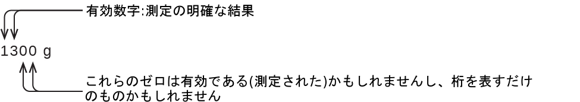

第1章 本質的な考え方
図1.1 | 化学物質と化学プロセスは、私たちの存在に欠かせないものであり、私たちに栄養を供給し、私たちを清潔で健康的な状態に維持し、電子機器を製造し、輸送を可能にするなど、さまざまな役割を果たしています。(credit “left”: modification of work by “vxla”/Flickr; credit “left middle”: modification of work by “the Italian voice”/Flickr; credit “right middle”: modification of work by Jason Trim; credit “right”: modification of work by “gosheshe”/Flickr)
この章の概要
1.1 文脈の中の化学
1.2 物質の相と分類
1.3 物理的性質と化学的性質
1.4 測定
1.5 測定の不確かさ、正確度、および精度
1.6 測定結果の数学的処理
はじめに
あなたの目覚ましが鳴り、一度か二度「スヌーズ」を押した後、あなたはベッドから抜け出します。あなたは活動を開始するために一杯のコーヒーを淹れて、その後シャワーを浴び、服を着て、朝食を食べて、携帯電話にメッセージがないかチェックします。学校に行く途中、あなたは車のガソリンを満タンにするために車を停めたので、化学の授業の初日にあやうく遅刻しそうになりました。教室の中で席を見つけたあなたは、スクリーンに映し出された質問を読みます:「クラスへようこそ!なぜ私たちは化学を勉強するべきなのでしょうか?」
あなたは答えを持っていますか?あなたが化学を勉強しているのは、それが履修要件を満たすからかもしれませんが、もしあなたが日々の行動を考えてみると、化学は別の理由からも興味深いものと感じるかもしれません。あなたが一日にすること、出会うことのほとんどは化学に関係しています。コーヒーを淹れるのも、卵を調理するのも、パンを焼くのも、化学が関係しています。石鹸やシャンプー、身につけている布地、あなたを世界へとつなげる電子機器、車を動かすガソリンなど、私たちが使っている製品にはすべて化学物質や化学プロセスが含まれています。あなたが意識しているかどうかに関わらず、化学はあなたの日常の世界の一部となっています。このコースでは、現代生活における化学の基礎となる多くの重要な原理を学びます。
1.1 文脈の中の化学
この節が終わるまでに、あなたは次のことができるようになります:
•化学の歴史的発展の概要を述べる
•日常生活における化学の重要性の例を示す
•科学的方法を記述する
•仮説・理論・法則を区別する
•巨視的な領域、微視的な領域、および記号的な領域を説明する例を示す
人類の歴史を通じて、人々は物質をより有用な形に変換しようと試みてきました。石器時代の私たちの祖先は、石英を破片に砕いて便利な道具にしたり、木を彫って彫像や玩具にしたりしていました。これらの試みは、物質そのものを変えることなく、物質の形を変えるものでした。しかし、私たちの知識が増えるにつれ、人間は物質の構成を変えるようにもなりました — 粘土を陶器に変換し、皮を保存処理して衣服を作り、銅の鉱石を銅の道具や武器へと転換し、穀物からパンを作りました。
人間が火を制御し、調理、陶器作り、金属の製錬に火を使うことを学んだときに、彼らは化学の実践を始めました。その後、人間は物質の特定の成分を分離して利用するようになりました。アロエ、ミルラ、アヘンなどのさまざまな薬物が植物から単離されました。藍やティリアン・パープルなどの染料は、植物や動物の物質から抽出されました。金属は合金を形成するために組み合わされ(たとえば、銅とスズを混ぜて青銅を作り)、より精巧な製錬技術によって鉄が作られました。アルカリは灰から抽出され、これらのアルカリと脂肪を組み合わせることによって石鹸が作られました。アルコールは発酵によって生成され、蒸留によって精製されました。
物質の振る舞いを理解しようとする試みは、2500年以上も前から行われています。早くも紀元前6世紀には、ギリシャの哲学者たちは、水が万物の基礎であるようなシステムのことを議論していました。あなたは、物質が土、空気、火、水の4つの要素で構成されているというギリシャ人の仮定を聞いたことがあるかもしれません。その後、化学技術と哲学的思索を融合させたものが、エジプト、中国、地中海東部から錬金術師たちによって広められました。この錬金術師たちは、鉛などの「卑金属」を金などの「貴金属」に変え、病気を治したり、寿命を延ばしたりするための万能薬を作ろうとしていました(図1.2)。
図1.2 | この描写は、1580年頃の錬金術師の作業場を示しています。錬金術は、物質を操作する方法にいくつかの有用な貢献をしましたが、現代の基準では科学的ではありませんでした。(credit: Chemical Heritage Foundation)
錬金術から、近代の化学へと歴史的な発展が続きました:天然資源からの薬物の単離、冶金、染料産業などです。今日、化学は、物質の振る舞いを利用して制御するための私たちの理解を深め、その能力を向上させ続けています。
化学:中心的な科学
化学は、他の膨大な数のSTEM分野(STEMとは、科学、技術、工学、数学の分野の研究領域の略)との相互接続性のために、「中心的な科学」と呼ばれることもあります。化学と化学者の言語は、生物学、医学、材料科学、法医学、環境科学、その他多くの分野で重要な役割を果たしています(図1.3)。物理学の基本原理は化学の多くの側面を理解するために不可欠であり、この2つの分野内の多くの下位分野の間には広範な重複があります(化学物理学や核化学のように)。数学、コンピュータサイエンス、情報理論は、私たちが化学の世界を計算し、解釈し、記述し、そして一般的に理解するのに役立つ重要なツールを提供しています。生物学と化学は生化学に集約されており、それは生物(私たちのような)が生きていくための多くの複雑な要因やプロセスを理解するために不可欠なものです。化学工学、材料科学、ナノテクノロジーは、化学的原理と経験的知見を組み合わせて、ガソリンから繊維、電子機器に至るまで、有用な物質を生み出します。農学、食品科学、獣医学、醸造学、ワイン醸造学は、世界の人々に食べ物や飲み物という形で栄養を提供しています。医学、薬学、バイオテクノロジー、植物学は、私たちを健康に保つために役立つ物質を特定し、生産しています。環境科学、地質学、海洋学、大気科学は、私たちの物理的な世界をよりよく理解し、保護するために、多くの化学的な考え方を取り入れています。天文学や宇宙論では、宇宙の理解に役立てるために化学的な考え方が使用されています。
図1.3 | 化学の知識は、幅広い科学分野を理解する上で中心的な役割を果たします。この図は、化学と他の分野との相互関係のほんの一端を示しています。
日常生活に欠かせない物質の変化には、どのようなものがあるでしょうか?食べ物を消化・吸収すること、衣類、容器、調理器具、クレジットカードなどを作るために使われるポリマーを合成すること、原油をガソリンや他の製品に精製することなどは、ほんのわずかな例に過ぎません。あなたがこの方向を進めていくと、あなたは物質の組成や構造の変化のさまざまな例、これらの変化を分類する方法とそれらが起こる方法、その原因、それらに伴うエネルギーの変化、そしてそれらに関係する原理や法則を発見することになるでしょう。これらのことを学んでいくうちに、あなたは物質の組成や性質、相互作用の研究である化学を学ぶことになります。化学の実践は、化学の本や実験室に限られたものではありません:誰かが物質の変化やそのような変化につながる可能性のある条件に関与しているときにはいつでも起こります。
科学的方法
化学は観察と実験に基づく科学です。化学をするということは、科学界に受け入れられている手順を用いて、化学の法則や理論の観点から質問に答えたり、観察結果を説明したりすることを試みるものです。質問に答えたり、観察結果を説明したりするための単一の道筋というものはありませんが、すべてのアプローチに共通している点があります:それぞれのアプローチは、結果を検証するために再現可能な実験に基づいた知識を使用しています。いくつかの道筋では、仮説、つまり情報を収集して確認するためのガイドとして機能するような、観察についての暫定的な説明が含まれています。仮説は、実験、計算、および/または他の人の実験との比較によってテストされ、必要に応じて洗練されます。
仮説の中には、法則としてまとめられるように振る舞いを説明する試みもあります。科学の法則は、膨大な数の実験的観察を要約し、自然界のある面を説明したり、予測したりします。もしそのような仮説が、大量の実験データを説明できることが判明した場合、それは理論の地位に達することができます。科学的な理論とは、自然の特定の側面について、十分に実証された包括的で検証可能な説明のことです。理論は満足のいく説明を提供してくれるために受け入れられますが、もし新しいデータが利用可能になれば修正されることもあります。質問や観察から法則や仮説へ、そして理論へとつながる発見の道筋は、仮説の実験的検証や理論の必要な修正と相まって、科学的方法と呼ばれます(図1.4)。
図1.4 | 科学的方法は、この図に示されるのと似たようなプロセスをたどります。すべての重要な構成要素が、ほぼ正しい順序で示されています。科学的な進歩がきれいで整然としたものであることはほとんどありません:それには、開かれた探究心と、知見に応じて質問や考え方を練り直すことが必要です。
化学の領域
化学者は、物質とエネルギーの振る舞いを、巨視的(マクロスコピック)、微視的(マイクロスコピック)、記号的(シンボリック)という3つの異なる領域で研究し、記述しています。これらの領域は、化学的な振る舞いを考察し、記述するための異なる方法を提供します。
マクロとは「大きな」を意味するギリシャ語の単語です。巨視的な領域は、私たちにとって身近なものです:それは、人間の視覚や触覚で直接感じることができる程度に大きな日常的な物事の領域です。日常生活の中では、あなたが食べる食べ物や、顔に感じる風などがこれにあたります。巨視的な領域には、私たちが密度、溶解度、可燃性などの物理的・化学的性質を観察・測定するような、日常的な化学や実験室での化学が含まれます。
マイクロはギリシャ語に由来するものであり、「小さな」という意味です。化学の微視的な領域は、しばしば想像の中で訪れる場所です。微視的な領域のいくつかの側面は、標準的な光学顕微鏡を介して見ることができます(たとえば、多くの生物細胞など)。より洗練された装置では、分子や原子のようなより小さな実体すら撮像することができます(図1.5(b)を参照)。
しかしながら、化学の微視的な領域の対象のほとんどは、最先端の顕微鏡でも見ることができないほど小さく、心の中でしか思い描けないかもしれません。微視的な領域の他の構成要素としては、イオンと電子、陽子と中性子、化学結合などがありますが、これらはいずれも小さすぎて見ることができません。
記号的な領域には、巨視的領域と微視的領域の構成要素を表現するために使用される専門的な言語が含まれます。化学記号(周期表の中で使用されるもののような)、化学式、化学反応式は記号的な領域の一部であり、グラフ、図面、計算なども同様です。これらの記号は化学において重要な役割を果たしています。なぜなら、巨視的領域の振る舞いを微視的領域の構成要素の観点から解釈するのに役立つからです。化学を学ぶ学生にとっての課題の1つは、同じ記号でも巨視的領域と微視的領域では異なるものを表すことがあることを認識することであり、化学を魅力的なものにしている特徴の1つは、観察可能な領域での振る舞いを説明するために、想像しなければならないような領域を使用することです。
この3つの領域を理解するのに役立つ方法は、水という本質的でどこにでもある物質を介してみることです。水が適度な温度では液体であり、低温では凍結して固体を形成し、高温では沸騰して気体を形成する(図1.5)というのは、巨視的な観察です。しかし、水の性質の中には、肉眼では観察することのできない微視的な領域に入るものもあります。水が2つの水素原子と1つの酸素原子で構成されているという記述や、これらの分子間の引力という観点による凍結・沸騰の説明は、微視的な領域に属するものです。水を巨視的なレベルでも微視的なレベルでも記述することのできるH₂Oという式は、記号的な領域の一例です。気体を表す(g)、固体を表す(s)、液体を表す(l)という略語も記号的なものです。
図1.5 | (a)空気中の水分、氷山、海水は巨視的な領域にある水を表しています。(b)分子レベル(微視的な領域)では、気体の分子は遠く離れてばらばらに動いており、固体の水分子は近くに集まってまとまっており、液体の分子は近くに集まってばらばらに動いています。(c)式H₂Oは水を表しており、(g)、(s)、(l)はその相を表しています。雲は、実際には非常に小さな液体の水滴か、固体の水の結晶で構成されていることに注意してください。大気中の気体状の水は肉眼では見えませんが、湿度としては感じられるかもしれません。(credit a: modification of work by “Gorkaazk”/Wikimedia Commons)
1.2 物質の相と分類
この節が終わるまでに、あなたは次のことができるようになります:
•物質のそれぞれの物理的状態(固体、液体、気体)の基本的な性質を記述する
•質量と重量を区別する
•物質の保存の法則を適用する
•物質を、その物理的状態と組成について、元素、化合物、均一混合物、または不均一混合物に分類する
•原子と分子を定義し、例を示す
物質とは、空間を占め、質量を持つものと定義されており、それは私たちの身の回りに存在しています。固体や液体は、より明らかな形での物質です:私たちは、それらが空間を占有していることがわかりますし、その重さからそれらが質量を持っていることがわかります。気体も物質です。もし気体が空間を占有していなければ、気体で満たされた風船は膨らみません(体積が増えません)。
固体、液体、気体は、地球上で一般的に見られる3つの物質の状態です(図1.6)。固体は硬くてはっきりとした形をしています。液体は流れていて容器の形をとりますが、重力が作用すると上面が平らであるか、またはわずかに曲がった形になります。(無重力では、液体は球形をしています。)液体と固体の両方のサンプルは、圧力にほとんど依存しない体積を持っています。気体は容器の形状と容器の体積の両方を持っています。
図1.6 | 物質の最も一般的な3つの状態または相は、固体、液体、気体です。
第4の物質の状態であるプラズマは、星々の内部で自然に発生しています。プラズマとは、かなりの数の電荷を帯びた粒子を含む気体状の物質の状態です(図1.7)。このような荷電粒子が存在することはプラズマに独特な性質を与えます。これは、プラズマが気体とは異なる物質の状態として分類されることを正当化します。プラズマは、星以外にも、他のいくつかの高温環境(自然のものと人工的なものの両方)に存在しています(落雷やある種のテレビの画面、微量の金属を検出するために使われる特殊な分析機器など)。
図1.7 | プラズマトーチを使って金属を切断することができます。(credit: “Hypertherm”/Wikimedia Commons)
学習へのリンク
プラズマテレビの小さなセルの中では、プラズマが紫外線光を放出して、その場所のディスプレイを特定の色に見せています。これらの小さな色の点が合成されて、あなたが見ている映像ができあがります。このビデオ(http://openstaxcollege.org/l/16plasma)を見て、プラズマとあなたがプラズマに出会う場所についてより詳しく学んでください。
物質のサンプルの一部は、固体、液体、および/または気体の性質を同時に持っているように見えます。これは、サンプルが多くの小さな破片で構成されている場合に起こることがあります。たとえば、私たちは砂を液体のように注ぐことができますが、それは砂がたくさんの小さな固体の砂の粒で構成されているからです。また、雲のように混合物である場合には、物質は2つ以上の状態の性質を持つこともあります。雲はある程度は気体のように振る舞うように見えますが、それらは実際には空気(気体)と水の小さな粒子(液体または固体)の混合物です。
物体の質量は、その中にある物質の量を測る尺度です。ある物体の質量を測定する1つの方法は、その物体を加速するのに必要な力を測定することです。自転車よりも車の方が加速するのに要する力はずっと大きいですが、それは車の方がはるかに質量があるためです。ある物体の質量を決定するより一般的な方法は、天秤を使用してその質量を標準的な質量と比較することです。
重量は質量に関係していますが、同じものではありません。重量とは、重力がある物体に及ぼす力のことです。この力は物体の質量に正比例します。重力が変わると物体の重量は変わりますが、その質量は変わりません。月に行ったからといって、宇宙飛行士の質量が変わるわけではありません。しかし、月の重力は地球の重力の6分の1しかないため、月にいる彼女の重量は地球の上にいるときの重量のわずか6分の1になります。彼女は旅の間、無視できるほどの外的な力(重力やその他の力)しか経験していない際には「無重量」と感じるかもしれませんが、当然のことながら、彼女は決して「無質量」ではありません。
物質の保存の法則は、物質についての多くの科学的観察をまとめたものです:それは、物質がある種類から別の種類に変化するとき(化学的変化)、または固体、液体、気体の間で変化するとき(物理的変化)、存在する物質の総量に検出可能な変化がないということを述べています。物質の保存の例としては、ビールの醸造や電池の動作が挙げられます(図1.8)。ビールの醸造中には、原料(水、酵母、穀物、麦芽、ホップ、糖類)が、実際には物質が失われることなく、ビール(水、アルコール、炭酸、香味物質)に変換されます。これは、瓶詰めの過程で最もはっきりと見られます。そこでは、グルコースがエタノールと二酸化炭素に変換され、物質の総質量は変化しません。これは、自動車の鉛酸蓄電池にも見ることができます:電気を発生させることができる元の物質(鉛、酸化鉛、硫酸)が、電気を発生させない別の物質(硫酸鉛、水)に変化しても、実際の物質の量は変化しません。
図1.8 | (a)ビールの前駆体物質の質量は、製造されるビールの質量と同じです:糖がアルコールと二酸化炭素になっています。(b)電気の発生で消費される鉛、酸化鉛、硫酸の質量は、生成される硫酸鉛と水の質量と全く同じです。
この保存則は物質のすべての変換に当てはまりますが、実験室での管理された条件の外では、私たちが特定の変換中に生成されるすべての物質を収集することはめったにないため、説得力のある例はほとんどありません。たとえば、あなたが食べ物を食べて、消化して、吸収するとき、元の食べ物に含まれる物質はすべて保存されます。しかし、物質の一部はあなたの体内に取り込まれ、その多くはさまざまな種類の廃棄物として排出されるため、測定によって検証することは困難です。
物質を分類する
物質はいくつかのカテゴリーに分類することができます。2つの広いカテゴリーは、混合物と純物質です。純物質は一定の組成を持っています。ある純物質のすべての試料は、まったく同じ組成と性質を持っています。スクロース(食卓の砂糖)のサンプルはどれも、質量比で炭素42.1%、水素6.5%、酸素51.4%で構成されています。スクロースのどのサンプルも、融点、色、甘味などの物理的性質は、それが単離された原料に関係なく同じです。
純物質は、元素と化合物という2つのクラスに分けることができます。化学的変化によってより単純な物質に分解することのできない純物質は元素と呼ばれます。鉄、銀、金、アルミニウム、硫黄、酸素、銅などは、100種類以上の既知の元素のうちのなじみのある例です。既知の元素のうち、約90種類は地球上に自然に存在しており、2ダースほどは研究室で作られたものです。
化学的変化によって分解することのできる純物質は化合物と呼ばれています。この分解によって、元素や他の化合物のどちらかが生成されることもあれば、その両方が生成されることもあります。酸化水銀(II)はオレンジ色の結晶性固体で、熱によって元素である水銀と酸素に分解されます(図1.9)。化合物のスクロースは、空気がない状態で加熱すると、元素である炭素と化合物である水に分解されます。(このプロセスの初期の段階で砂糖が茶色くなっていくことは、キャラメル化として知られています。これがキャラメルリンゴ、キャラメル色になった玉ねぎ、そしてキャラメルに対して特徴的な甘さとナッツのような風味を与えるものです。)塩化銀(I)は白色の固体で、光を吸収することによって元素である銀と塩素に分解されます。この性質は、この化合物が写真フィルムやフォトクロミックメガネ(光にさらされるとレンズが暗くなるもの)に使用される基盤となっています。
図1.9 | (a)化合物である酸化水銀(II)を、(b)加熱すると、(c)銀色の液滴状の液体の水銀と目に見えない気体の酸素に分解します。(credit: modification of work by Paul Flowers)
学習へのリンク
多くの化合物は加熱すると分解します。このサイト(http://openstaxcollege.org/l/16mercury)では、酸化水銀(HgO)の分解の様子を示しています。また、初期の写真撮影の基礎となった塩化銀(http://openstaxcollege.org/l/16silvchloride) (AgCl)の光化学的分解の例も見ることができます。
結合した元素の性質は、遊離状態(結合していない状態)の性質とは異なります。たとえば、白い結晶性の砂糖(スクロース)は、元素である炭素(結合していない形態のうちの1つでは黒い固体)と、2つの元素である水素と酸素(結合していない状態では無色の気体)とが、化学的に結合してできた化合物です。元素である遊離ナトリウム(柔らかく光沢のある金属固体)と、元素である遊離塩素(黄緑色の気体)とが結合して、化合物である塩化ナトリウム(食卓の塩)(白色の結晶性固体)が生成されます。
混合物は、2種類以上の物質で構成されていますが、これらの物質はさまざまな量で存在することがあり、蒸発などの物理的変化によって分離することができます (この点については後ほど詳しく説明します)。さまざまな場所ごとに異なる組成を持つ混合物は、不均一混合物と呼ばれます。イタリアンドレッシングは不均一混合物の一例です (図1.10)。それはさまざまに異なる油、酢、ハーブの量でもって調製されるため、組成が異なる場合があります。それは混合物にわたって場所から場所で同じものではありません — 油と酢が分離してハーブが沈降するため、ある1滴はほとんどが酢であるのに対し、別の1滴はほとんどが油かハーブであるかもしれません。不均一混合物の他の例としては、チョコレートチップクッキー(私たちはチョコレート、ナッツ、クッキー生地の分離した破片を見ることができます)や花崗岩(私たちは石英、雲母、長石などを見ることができます)があります。
均一混合物は、溶液とも呼ばれ、均一な組成を示し、視覚的には全体にわたって同じように見えます。溶液の一例は、水、糖、着色料、香料、および電解質が均一に混合されたスポーツドリンクです(図1.10)。スポーツドリンクの一滴一滴の味は同じです。なぜなら、どの一滴も同じ量の水、糖、および他の内容物からなるためです。スポーツドリンクの組成はさまざまであり、糖、香料、その他の成分をいくらか多くしたり少なくしたりしても作ることができ、そしてそれは依然としてスポーツドリンクであるということに注意してください。均一混合物の他の例としては、空気、メープルシロップ、ガソリン、および水の中に塩を入れた溶液などがあります。
図1.10 | (a)油と酢のサラダドレッシングは、その組成が全体にわたって均一ではないため、不均一混合物です。(b)市販のスポーツドリンクは、その組成が全体にわたって均一であるため、均一混合物です。(credit a “left”: modification of work by John Mayer; credit a “right”: modification of work by Umberto Salvagnin; credit b “left: modification of work by Jeff Bedford)
元素は100種類をわずかに超える程度の数ですが、これらの元素のさまざまな組み合わせから数千万種類の化合物が生まれます。それぞれの化合物は特定の組成を持ち、他のすべての化合物から区別される明確な化学的・物理的性質を持っています。そして、当然のことながら、元素と化合物を組み合わせて異なる混合物を形成する方法が無数にあります。物質のさまざまな主要な分類を区別する方法の概要が図1.11に示されています。
図1.11 | ある物質は、その性質に応じて、均一混合物、不均一混合物、化合物、または元素に分類されます。
地球の地殻と大気の約99%を占めるのは11種類の元素です(表1.1)。これらの元素の総量のうち、酸素が約2分の1、ケイ素が約4分の1を占めています。地球上の元素の大部分は他の元素と化学的に結合した状態で存在しています。約4分の1の元素は遊離状態でも存在しています。
表1.1
原子と分子
原子とは、ある元素の最小の粒子のことであり、その元素の性質を持ち、化学的な組み合わせに入ることができるものです。たとえば、金という元素を考えてみましょう。金塊を半分に切った後、その半分の片方をさらに半分に切り、この作業を繰り返して、半分に切ることができないほど小さな金のかけらが残るところまでいったと想像してみてください(あなたのナイフがどれほど小さいかは気にせずに)。この最小の大きさの金のかけらが1つの原子(アトム:「不可分」を意味するギリシャ語のアトモスに由来)です(図1.12)。この原子をこれ以上分割してしまうと、金ではなくなってしまいます。

図1.12 | (a)この写真は金塊を示しています。(b)走査型トンネル顕微鏡(STM)は、この金の結晶の画像のように、固体の表面の像を作り出すことができます。それぞれの球体は1つの金の原子を表しています。(credit a: modification of work by United States Geological Survey; credit b: modification of work by “Erwinrossen”/Wikimedia Commons)
物質が原子で構成されているという最初の提案は、ギリシャの哲学者レウキッポスとデモクリトスのものとされており、彼らは紀元前5世紀にその考え方を発展させました。しかしながら、科学に強い関心を持っていたイギリスの学校教師ジョン・ドルトン(1766-1844)が、この仮説を定量的な測定で支持したのは19世紀初頭になってからのことでした。それ以来、実験の繰り返しによってこの仮説の多くの側面が確認され、それは化学の中心的な理論の1つとなっています。ドルトンの原子論の他の部分は今でも使われていますが、若干の修正が加えられています(ドルトンの理論の詳細は、原子と分子の章に記載されています)。
1つの原子は、その大きさを想像するのが困難なほど小さいです。私たちが何の助けも借りずに目で見ることができる最小のものの1つは、蜘蛛の巣の一本の糸です:この糸の直径は約1万分の1cm(0.0001cm)です。一本の糸の断面は顕微鏡がなければほとんど見ることはできませんが、それは原子のスケールでは巨大なものです。蜘蛛の巣の中の炭素原子1個の直径は約0.000000015cmですから、糸の直径の長さに及ぶには約7000個の炭素原子が必要になります。これを分かりやすくすると、もし1つの炭素原子の大きさが10セント硬貨のサイズだとすると、一本の糸の断面積はフットボール場よりも大きくなります。そして、それを覆うためには約1億5千万個の炭素原子の「硬貨」が必要になるでしょう。図1.13は、一般的な綿花を顕微鏡や原子レベルで順番に拡大した写真です。
図1.13 | これらの画像は、順番に近づいていく光景を提供してくれます:(a)綿花、(b)光学顕微鏡で見た一本の綿の繊維(40倍に拡大)、(c)電子顕微鏡で見た一本の綿の繊維の像(光学顕微鏡よりもはるかに高い倍率)、(d)と(e)繊維の原子レベルのモデル(色の異なる球体は異なる元素の原子を表しています)。(credit c: modification of work by “Featheredtar”/Wikimedia Commons)
1つの原子はあまりにも軽いので、その質量もまた想像することが困難です。10億個の鉛原子(1,000,000,000個の原子)の重さは約3×10⁻¹³グラムで、世界で最も感度の高い天秤をもってしても量るにはあまりにも軽すぎる質量です。量るには、300,000,000,000,000個以上の鉛原子(300兆個、または3×10¹⁴個)が必要であり、それらはわずか0.0000001グラムの重さでしょう。
個々の原子の集合体を見つけることは稀です。ヘリウム、ネオン、アルゴンなどの気体のように、互いに独立して動き回る個々の原子の集まりからなる元素はごくわずかです。水素、窒素、酸素、塩素などの気体のような他の元素は、原子の対からなる単位で構成されています(図1.14)。リンという元素の1つの形態は、4つのリン原子からなる単位で構成されています。硫黄という元素にはさまざまな形がありますが、そのうちの1つは硫黄原子8個からなる単位で構成されています。これらの単位は分子と呼ばれています。1つの分子は2つかそれ以上の原子が化学結合と呼ばれる強い力で結合してできています。ある1つの分子内の原子は1つの単位として動き回りますが、これは、6本入りのソーダの缶のパックや、鍵の束が1つのキーホルダーでまとめられているようなものです。分子は、水素、酸素、硫黄といった元素の分子で見られるように2つかそれ以上の同一の原子で構成されている場合もあれば、水の分子で見られるように2つかそれ以上の異なる原子で構成されている場合もあります。それぞれの水分子は、2つの水素原子と1つの酸素原子を含む単位です。グルコースのそれぞれの分子は、炭素原子6個、水素原子12個、酸素原子6個を含む単位です。分子は原子と同じように、信じられないほど小さくて軽いです。もし普通のコップ一杯の水を地球の大きさに拡大すると、その中の水分子はゴルフボールくらいの大きさになります。
図1.14 | 水素、酸素、リン、硫黄という元素は、同じ元素の原子の2つかそれ以上が集まって分子を形成しています。水、二酸化炭素、グルコースという化合物は、異なる元素の原子が組み合わさってできています。
日常生活の中の化学
水の分解・水素の生成
水は、水素と酸素という元素が2対1の割合で結合して構成されています。水は、エネルギーを加えることによって水素と酸素の気体に分解することができます。その方法の1つとして、図1.15に示されるように、電池や電源を使って分解する方法があります。
図1.15 | 水の分解が巨視的、微視的、記号的なレベルで示されています。電池は、水を分解する電流(微視的)を供給します。巨視的には、液体は気体の水素(左)と気体の酸素(右)に分離します。記号的には、この変化は液体のH₂Oが気体のH₂とO₂に分離すると示すことによって表されます。
水の分解は、水分子の中の原子が別の分子(それぞれ2つの水素原子からなるものと2つの酸素原子からなるもの)に再配列されることを伴います。2つの水分子は、1つの酸素分子と2つの水素分子を形成します。ここで起こっていることを表す2H₂O(l)→2H₂(g) + O₂(g)という表現については、後の章で詳しく説明します。
生成される2つの気体は、明確に異なる性質を持っています。酸素は可燃性ではありませんが、燃料の燃焼に必要とされます。水素は非常に可燃性であり、強力なエネルギー源です。この知識は、私たちの世界の中でどのように応用できるでしょうか?1つの応用には、より燃料効率の高い交通手段の研究があります。燃料電池自動車(FCV)は、ガソリンの代わりに水素で走ります(図1.16)。FCVは内燃エンジンを搭載した自動車よりも効率が良く、汚染物質を排出しない上に、温室効果ガスの排出量も少なく、化石燃料への依存度を下げることができます。しかしながら、FCVは経済的にはまだ実現可能ではなく、現在の水素製造は天然ガスに依存しています。もし私たちが水を経済的に分解するプロセスを開発したり、別の環境に配慮した方法で水素を製造することができれば、FCVは将来の道になるかもしれません。
図1.16 | 燃料電池は、電気化学的なプロセスを介して水素と酸素から電気エネルギーを発生させ、廃棄物として水だけを生成します。
日常生活の中の化学
携帯電話の化学
携帯電話(図1.17)やその他のスマートデバイスがなければ、あなたの生活がどれほど違ったものになるか想像してみてください。携帯電話は数多くの化学物質から作られており、それらは広範で綿密な化学原理の理解を用いて抽出、精製、純化、構築が行われています。自然界に存在する元素の約30%が、一般的なスマートフォンの中に含まれています。ケース/本体/フレームは、炭素、水素、酸素、窒素を主成分とする丈夫で耐久性のあるポリマー[アクリロニトリル・ブタジエン・スチレン(ABS)やポリカーボネート熱可塑性樹脂]と、アルミニウム、マグネシウム、鉄などの軽くて丈夫な構造金属の組み合わせで構成されています。表示画面は、特殊強化ガラス(シリカガラスにアルミニウム、ナトリウム、カリウムを添加して強化したもの)で作られ、それに導電性を持たせる材料(酸化インジウムスズなど)でコーティングされています。回路基板は、半導体材料(通常はシリコン)、銅・スズ・銀・金などの一般的に使用される金属、イットリウム・プラセオジム・ガドリニウムなどのあまりなじみのない元素を使用しています。電池は、リチウムイオンと、鉄、コバルト、銅、ポリエチレンオキサイド、ポリアクリロニトリルなどのさまざまな材料に依存しています。
図1.17 | 自然界に存在する元素のほぼ3分の1が携帯電話を作るために使われています。(credit: modification of work by John Taylor)
1.3 物理的性質と化学的性質
この節が終わるまでに、あなたは次のことができるようになります:
•物質の物理的または化学的な性質と変化を特定する
•物質の示量性または示強性を特定する
ある物質を別の物質と区別する特徴のことを性質といいます。物理的性質は、化学組成の変化とは無関係な物質の特徴のことです。物理的性質の身近な例としては、密度、色、硬度、融点や沸点、電気伝導率などがあります。密度や色などのいくつかの物理的性質は、物質の物理的状態を変化させることなく観察することができます。鉄の溶融温度や水の凝固温度などといった他の物理的性質は、物質が物理的変化を受けたときにのみ観察することができます。物理的変化とは、物質に含まれる内容物の化学的同一性の変化を伴わないような、物質の状態や性質の変化です。ロウが溶けるとき、砂糖がコーヒーに溶けるとき、蒸気が凝縮して液体の水になるときなどに物理的変化が観測されます(図1.18)。物理的変化の他の例としては、金属を磁化したり、消磁したりすること(一般的な盗難防止のセキュリティタグで行われているように)、固体を粉体に粉砕すること(これは時には色に顕著な変化をもたらすことがあります)などがあります。これらのそれぞれの例では、物質の物理的な状態、形態、または性質に変化がありますが、化学組成に変化はありません。
図1.18 | (a)固形のロウが加熱されて液体のロウになるときには、ロウは物理的に変化しています。(b)鍋の中で水蒸気が凝縮し、水蒸気が液体の水に変化することは、物理的な変化です。(credit a: modification of work by “95jb14”/Wikimedia Commons; credit b: modification of work by “mjneuby”/Flickr)
ある種類の物質が別の種類の物質に変化すること(または変化できないこと)は、化学的性質です。化学的性質の例としては、可燃性、毒性、酸性、その他多くの種類の反応性があります。たとえば、鉄は水の存在下で酸素と結合して錆を形成しますが、クロムは酸化しません(図1.19)。ニトログリセリンは爆発しやすいので非常に危険ですが、ネオンは反応性が非常に低いのでほとんど危険はありません。
図1.19 | (a)鉄の化学的性質の1つは錆びることであり、(b)クロムの化学的性質の1つは錆びないことです。(credit a: modification of work by Tony Hisgett; credit b: modification of work by “Atoma”/Wikimedia Commons)
化学的変化は常に、変化の前に存在していた物質とは異なる1種類かそれ以上の物質を生成します。錆の形成は化学的変化です。なぜなら、錆は、錆が形成される前に存在していた鉄、酸素、水とは異なる種類の物質であるからです。ニトログリセリンの爆発は化学的変化です。なぜなら、生成される気体は元の物質とは非常に異なる種類の物質であるからです。化学的変化の他の例としては、実験室で行われる反応(銅と硝酸の反応など)、あらゆる形態の燃焼(燃えること)、食品の調理、消化、腐敗などがあります(図1.20)。
図1.20 | (a)銅と硝酸は化学的変化を起こして硝酸銅と褐色の気体状の二酸化窒素を形成します。(b)マッチを燃焼させると、マッチの中のセルロースと空気中の酸素が化学的な変化を起こして二酸化炭素と水蒸気を形成します。(c)赤身の肉を調理すると多くの化学的変化が起こります。その中にはミオグロビン中の鉄の酸化が含まれ、それはおなじみの赤色から茶色への色の変化をもたらします。(d)バナナが茶色に変色するのは、新しく色の濃い(あまりおいしくない)物質が形成されることによる化学的変化です。(credit b: modification of work by Jeff Turner; credit c: modification of work by Gloria Cabada-Leman; credit d: modification of work by Roberto Verzo)
物質の性質は、2つのカテゴリーのいずれかに分類されます。もしその性質が存在する物質の量に依存する場合、それは示量性です。物質の質量と体積は、示量性の例です。たとえば、1ガロンの牛乳はコップ一杯の牛乳よりも大きな質量を持っています。示量性の値は、問題となっている物質の量に正比例します。もし物質のサンプルの性質が、存在する物質の量に依存しない場合、それは示強性です。温度は示強性の一例です。もし1ガロンの牛乳とコップ一杯の牛乳がそれぞれ20°C(室温)にある場合、それらを混ぜ合わせたとき、温度は20°Cのままに留まります。もう1つの例として、熱と温度という異なるが関連性のある性質を考えてみましょう。熱い食用油が一滴だけ腕にはねたならば、短期間に軽い不快感があるだけですが、鍋一杯分の熱い油では重度の火傷をしてしまいます。一滴の油と鍋一杯分の油はどちらも同じ温度ですが(示強性)、鍋の油の方が明らかに多くの熱を含んでいます(示量性)。
日常生活の中の化学
ハザード・ダイヤモンド
あなたは、研究室や職場の化学物質の容器に、図1.21に示されるような記号が描かれているのを目にしたことがあるかもしれません。この化学物質のハザード・ダイヤモンドは、「ファイア・ダイヤモンド」または「ハザード・ダイヤモンド」と呼ばれることがあり、特定の物質を扱う際に注意すべきさまざまな危険性を簡潔にまとめた貴重な情報を提供しています。
図1.21 | 全米防火協会(NFPA) のハザード・ダイヤモンドは、化学物質の主な危険性をまとめたものです。
全米防火協会(NFPA)704危険性表示システムは、特定の物質についての安全性の情報を提供するためにNFPAによって開発されました。このシステムは、可燃性、反応性、健康の危険性、およびその他の危険性について詳細に説明します。全体的なダイヤモンド型のシンボルの中で、一番上(赤色)のダイヤモンドは、燃焼の危険性のレベル(引火点の温度範囲)を示しています。青色(左側)のダイヤモンドは、健康の危険性のレベルを示しています。黄色(右側)のダイヤモンドは、物質が爆発や激しい化学的変化をどのくらい起こしやすいかなどの反応性の危険度を記述しています。白色(下)のダイヤモンドは、それが酸化剤(空気や酸素がなくても物質を燃焼させることができる)であるか、水と異常な反応や危険な反応を起こすか、腐食性か、酸性か、塩基性か、生物学的な危険性があるか、放射性か、などといった特別な危険性を示しています。それぞれの危険性は0から4までの尺度で評価され、0は危険性なし、4は極度に危険であるとされています。
多くの元素は化学的・物理的性質が大きく異なりますが、いくつかの元素は似たような性質を持っています。たとえば、多くの元素は熱や電気をよく伝導しますが、他の元素は伝導性が悪いです。これらの性質を利用して、元素を3つのクラスに分類することができます:金属(電気をよく伝導する元素)、非金属(電気をあまり伝導しない元素)、半金属(中間的な電気伝導性を持つ元素)です。
周期表は、性質が似ている元素を近くに配置した元素の表です(図1.22)。あなたは、化学の勉強を続けるうちに、周期表についてさらに詳しく学ぶことになるでしょう。

図1.22 | 周期表は、特定の似たような性質にしたがって元素をグループにまとめるやり方を示しています。背景の色は、元素が金属、半金属、非金属であるかどうかを示し、元素記号の色は、それが固体、液体、気体であるかどうかを示していることに注意してください。
1.4 測定
この節が終わるまでに、あなたは次のことができるようになります:
•測定のプロセスを説明する
•量の3つの基本的な部分を特定する
•長さ、質量、体積、密度、温度、時間の性質と単位を記述する
•メートル法およびその他の単位系で基本的な単位計算および変換を行う
測定は、化学の巨視的・微視的領域の両方において、物質とエネルギーの振る舞いを記述する仮説、理論、法則を伝える情報の多くを提供します。すべての測定は3種類の情報を提供します:測定の大きさまたは規模(数値)、測定の比較の基準(単位)、および測定の不確かさの指標です。量が書かれるときには、数と単位は明示的に表示されますが、不確かさは、黙示的に表示される測定結果の側面です。不確かさについては、後述します。
測定における数は、10進法や科学的記数法など、さまざまな方法で表現することができます。(科学的記数法は指数的記数法としても知られており、このトピックの説明は付録Bに記載されています。)たとえば、ボーイング777-200ER旅客機の最大離陸重量は298,000キログラムであり、これは2.98×10⁵kgと書くこともできます。また、平均的な蚊の質量は約0.0000025キログラムであり、これは2.5×10⁻⁶kgと書くことができます。
リットル、ポンド、センチメートルなどの単位は、測定の比較の基準となります。2リットルの清涼飲料水のボトルには、1リットルの体積の2倍の体積の飲料が入っています。0.25ポンドのハンバーガーを作るために使用される肉の重さは、1ポンドとして受け入れられている重さの4分の1です。単位がなければ、数字は意味をなさず、混乱を招くだけでなく、生命を脅かすことにもなりかねません。ある医師が患者の発作をコントロールするためにフェノバルビタールを処方し、単位を指定せずに「100」の用量だけを書いたとします。これは、投与する医療専門家を混乱させるだけでなく、結果は悲惨なものになる可能性があります:100mgを1日3回投与すると、抗けいれん薬として有効ですが、100gの単回投与では致死量の10倍以上になります。
7つの基本的な性質の測定単位(「基本単位」)が表1.12に列挙されています。これらの単位の基準は国際協定で定められており、それらは国際単位系(International System of Units)またはSI単位(フランス語のLe Système International d’Unitésに由来)と呼ばれています。SI単位は1964年からアメリカ国立標準技術研究所(NIST)で使用されています。他の性質の単位は、これらの7つの基本単位から導き出されることがあります。

表1.2
日常的な測定単位は、しばしば他の単位の小数または倍数として定義されます。牛乳は一般的に、1ガロン(4クォート)、1クォート(0.25ガロン)、1パイント(0.5クォート)の容器に入れられています。これと同じアプローチがSI単位でも使われますが、これらの小数や倍数は常に10の累乗になります。小数または倍数のSI単位は、接頭辞と基本単位の名前を使用して名前が付けられます。たとえば、1000メートルの長さはキロメートルとも呼ばれます。これは、接頭辞のキロが「千」を意味し、科学的記数法では10³(1キロメートル=1000メートル=10³メートル)となるからです。使用される接頭辞と10の累乗が表1.3に示されています。
表1.3
学習へのリンク
科学的記数法の復習や練習が必要ですか?このサイト (http://openstaxcollege.org/l/16notation) にアクセスして、科学的記数法の基本を確認してください。
SI基本単位
メートル法の最初の単位は、フランス革命の際にフランスで制定されました(それが最終的にSI系に発展しました)。メートルとキログラムの元となる単位は、1799年にフランスで採用され、最終的には他の国でも採用されました。ここでは、化学で一般的に使われているSIの基本単位のうち、4つの単位を紹介します。その他のSI単位については後の章で紹介します。
長さ
SI単位系と元のメートル法の両方において、長さの標準単位はメートル(m)です。1メートルはもともと北極から赤道までの距離の1/10,000,000として指定されていましたが、現在では真空中の光が1秒の1/299,792,458の間に進む距離として定義されています。1メートルは1ヤードよりも約3インチ長いです(図1.23)。1メートルは約39.37インチまたは1.094ヤードです。長い距離はしばしばキロメートル(1 km = 1000 m = 10³ m)で報告され、短い距離はセンチメートル(1 cm = 0.01 m = 10⁻² m)やミリメートル(1 mm = 0.001 m = 10⁻³ m)で報告されることがあります。
図1.23 | 1メートル、1ヤード、1センチメートル、1インチの相対的な長さ(実際の大きさではありません)と、2.54センチメートルと1インチの比較、1メートルと1.094ヤードの比較が示されています。
質量
SI単位系の標準的な質量の単位はキログラム(kg)です。キログラムは、国際純粋・応用化学連合(IUPAC)によって、以前は特定の参照物体の質量として定義されていました。この物体はもともとは純水1リットルであり、より最近では高さと直径が39㎜である白金-イリジウム合金からなる金属円柱でした(図1.24)。2019年5月、この定義は、いくつかの基礎物理定数の高精度で測定された値に基づいたものに変更されました。[1]1キログラムは約2.2ポンドです。グラム(g)はキログラムの質量のちょうど1000分の1(10⁻³kg)に相当します。
図1.24 | このキログラム原器のレプリカは、メリーランド州の国立標準技術研究所(NIST)に保管されています。(credit: National Institutes of Standards and Technology)
温度
温度は示強性です。温度のSI単位はケルビン(K)です。IUPACの規約では、単語にはケルビン(すべて小文字のkelvin)、単位記号にはK(大文字)を使用し、単語の「度」も度の記号(°)も使用しないことになっています。摂氏(°C)もSI単位系で認められており、「度」という言葉と度の記号の両方が摂氏の測定に使用されています。摂氏の度はケルビンと同じ大きさですが、2つの尺度は異なる場所にゼロを配置します。水は定義上、273.15K(0°C)で凍り、373.15K(100°C)で沸騰します。また、人間の通常の体温は約310K(37°C)です。これら2つの単位と華氏の尺度との間での変換については、この章の後ろで議論します。
時間
時間のSI基本単位は秒(s)です。小さな時間間隔や大きな時間間隔は、適切な接頭辞を用いて表すことができます。たとえば、3マイクロ秒 = 0.000003 s = 3 × 10⁻⁶ s、5メガ秒 = 5,000,000 s = 5 × 10⁶ sのように表すことができます。また、時間、日、年を使うこともできます。
派生SI単位
7つのSI基本単位から多くの単位を導き出すことができます。たとえば、私たちは長さの基本単位を使って体積の単位を定義したり、質量と長さの基本単位を使って密度の単位を定義したりすることができます。
体積
体積とは、ある物体が占める空間の量を表す尺度です。体積の標準的なSI単位は、長さの基本単位によって定義されます(図1.25)。標準的な体積は立方メートル(m³)で、辺の長さがちょうど1メートルの立方体です。1立方メートルの水を分配するために、私たちは辺の長さがちょうど1メートルである立方体の箱を作ることができるでしょう。この箱には、1立方メートルの水やその他の物質を入れることができます。
より一般的に使用される体積の単位は、デシメートル(0.1m、または10cm)から派生したものです。辺の長さがちょうど1デシメートルの立方体には、1立方デシメートル(dm³)の体積が含まれます。1立方デシメートルのより一般的な名称は、1リットル(L)です。1リットルは約1.06クォートです。
立方センチメートル(cm³)は、辺の長さがちょうど1センチメートルの立方体の体積です。略語のcc(立方センチメートル)は、しばしば医療専門家によって使われます。1立方センチメートルは1ミリリットル(mL)に相当し、1リットルの1/1000です。
図1.25 | (a)1 m³、1 dm³ (1 L)、1 cm³ (1 mL) の立方体の相対的な体積が示されています(縮尺ではありません)。(b)10セント硬貨の直径と、1 cm³ (1 mL)の立方体の辺の長さを比較しています。
密度
私たちは物質の質量と体積を用いて密度を決定します。したがって、密度の単位は質量と長さの基本単位によって定義されます。
ある物質の密度とは、その物質の試料の質量と体積の比です。密度のSI単位は1立方メートルあたりキログラム(kg/m³)です。しかしながら、多くの場合これは不便な単位であり、私たちはしばしば、固体や液体の密度には立方センチメートルあたりグラム(g/cm³)を、気体の密度にはリットルあたりグラム(g/L)を使用します。例外もありますが、ほとんどの液体や固体の密度は約0.7g/cm³(ガソリンの密度)から19g/cm³(金の密度)までの範囲に収まります。空気の密度は約1.2g/Lです。表1.4にいくつかの一般的な物質の密度を示します。
表1.4
ある物体の密度を決定する方法はたくさんありますが、おそらく最も明快な方法は、物体の質量と体積を別々に求め、試料の質量を体積で割ることです。以下の例題では、質量は計量によって直接求められていますが、体積は長さの測定を通じて間接的に求められています。
\[ 密度 = \frac{質量}{体積} \]
例題1.1 密度の計算
金(金塊、延べ棒、硬貨の中で)は、何世紀にもわたって通貨の一形態となっています。本物の金塊に投資せずに人々を騙して偽の金塊にお金を払わせるために、詐欺師は中空の金塊の中心に鉛を詰めて、塊全体が金であると購入者を騙すことを考えてきました。しかし、これはうまくいきません:鉛は密度の高い物質ですが、その密度は金の密度(19.3 g/cm³)ほど大きくはありません。鉛の立方体の辺の長さが2.00cmで質量が90.7gの場合、鉛の密度はいくつですか?
解法
物質の密度は、質量を体積で割ることによって計算できます。立方体の体積は、辺の長さを三乗して計算します。
\[ \rm鉛の立方体の体積 = 2.00\ cm×2.00\ cm×2.00\ cm = 8.00\ cm^{3}\\ 密度 = \frac{質量}{体積} = \frac{90.7\ g}{8.00\ cm^{3}} = 11.3\ g/cm^{3} \]
(小数第一位へと丸める理由については、次の節で議論します。)
学習内容の確認
(a)辺の長さが0.843cmの立方体(cm³)の体積は、小数第三位まででいくつになりますか?
(b)問(a)の立方体が銅で質量が5.34gの場合、銅の密度は小数第二位まででいくつになりますか?
解答:(a)0.599 cm³、(b)8.91 g/cm³
学習へのリンク
質量、体積、密度の関係についてさらに詳しく知りたい場合は、このインタラクティブ・シミュレータ(http://openstaxcollege.org/l/16phetmasvolden) を使用して、木材、氷、レンガ、アルミニウムなどのさまざまな材料の密度を調べてみましょう。
例題1.2 水の変位を使った密度の決定
このPhETシミュレーション(http://openstaxcollege.org/l/16phetmasvolden)は、水の変位を利用して密度を決定するという、別の方法を示しています。赤色と黄色のブロックの密度を求めてください。
解法
あなたが密度シミュレーションを開き、同じ質量(「Same Mass」)を選択すると、色のついた5.00kgの複数のブロックからいくつかを選択して、100.00Lの水が入った水槽に落とすことができます。黄色のブロックは浮いて(それは水よりも密度が低いです)、水位が105.00 Lまで上昇します。浮いている間、黄色のブロックは5.00 Lの水(ブロックの重量に等しい量)を変位させます。赤色のブロックは沈み(それは水よりも密度が高く、1.00kg/Lの密度を有しています)、水位は101.25 Lまで上昇します。
したがって、赤いブロックは1.25 Lの水を変位させますが、これは赤いブロックの体積に等しい量です。赤いブロックの密度は:
\[ \rm密度 = \frac{質量}{体積} = \frac{5.00\ kg}{1.25\ L} = 4.00\ kg/L \]
黄色いブロックは完全に水没してはいないので、この情報から黄色いブロックの密度を決定することはできないということに注意してください。しかし、もしあなたが黄色のブロックを水槽の底に固定すると、水位が110.00Lまで上昇します。これは、10.00Lの水を変位させたことを意味し、ここからその密度がわかります:
\[ \rm密度 = \frac{質量}{体積} = \frac{5.00\ kg}{10.00\ L} = 0.500\ kg/L \]
学習内容の確認
水からすべてのブロックを取り除き、緑色のブロックを水槽に加え、水槽のほぼ中央に配置してください。緑色のブロックの密度を求めてください。
解答:2.00 kg/L
1.5 測定の不確かさ、正確度、および精度
この節が終わるまでに、あなたは次のことができるようになります:
•正確度と精度を定義する
•正確な数と不確かな数を区別する
•有効数字を用いて量の不確かさを正しく表現する
•計算された量に対して適切な丸め方のルールを適用する
計数は、不確かさから自由である唯一の測定のタイプです(ただし計数プロセスが進行中の間、計数されている物体の数が変化しないことを条件に)。このような計数による測定の結果は、正確な数の例です。カートンの中の卵を数えることで、そのカートンに何個の卵が入っているかを正確に決定することができます。定義された量の数もまた正確なものです。定義により、1フィートは正確に12インチ、1インチは正確に2.54センチメートル、1グラムは正確に0.001キログラムです。しかしながら、計数以外の測定から得られた量は、使用される測定プロセスの実際的な制限のために、さまざまな程度で不確かなものです。
測定における有効数字
測定された量の数は、定義された量や直接数えられた量とは異なり、正確ではありません。目盛りのついたシリンダーの中の液体の体積を測定するには、あなたは凹面の底、つまり液体の湾曲した表面の最も低い位置で目盛りを読み取る必要があります。
図1.26 | この目盛り付きシリンダーの中の液体の体積を測定するには、あなたは21mLと22mLのしるしの間の距離を心の中で10分の1ミリリットルに細分化して、凹面の底で読み取る(推定する)必要があります。
図1.26の図を参照してください。この場合の凹面の底は明らかに21と22のしるしの間にあるので、液体の体積は確かに21mLよりも大きいが、22mLよりも小さいことを意味しています。凹面は21mLのしるしよりも22mLのしるしに少し近いように見えるので、この液体の体積の妥当な推定値は21.6mLでしょう。21.6という数字の中では、2と1の数字は確かですが、6は推定値です。ある人は凹面の位置がそれぞれのしるしから等距離にあると推定して10分の1の位の数字を5と推定するかもしれませんし、他の人は22mLのしるしにさらに近いと考えてこの数字を7と推定するかもしれません。10分の1の位の数字が不確かなので、100分の1の位の数字を推定しようとするのは無意味であることに注意してください。一般的に、この目盛り付きシリンダーのもののような数値目盛りでは、最小目盛りの10分の1まで測定することができるでしょう。この場合の目盛りは1mLごとに分割されているので、体積は0.1mL単位で最も近い値を測定することができるでしょう。
この概念は、あなたが能動的に推定を行わない場合であったとしても、すべての測定に当てはまります。もしあなたが標準的な電子天秤に25セント硬貨を置くと、6.72gの読み取り値が得られるでしょう。6と7の数字は確かであり、2という数字は25セント硬貨の質量が6.71グラムと6.73グラムの間にあるようだということを示しています。25セント硬貨の重量は約6.72グラムで、測定の数値上の不確かさは±0.01グラムです。もしこのコインをより感度の高い天秤で計量した場合、質量は6.723グラムになるかもしれません。これは、その質量が6.722グラムから6.724グラムの間にあり、0.001グラムの不確かさがあることを意味します。すべての測定にはいくらかの不確かさがあり、これは使用する機器(および使用者の能力)に依存します。不確かな最後の桁を含む測定のすべての桁は、有効数字または有効桁と呼ばれます。ゼロが測定値であることもあるということに注意してください。たとえば、もしあなたが体重を1ポンド単位で表示するはかりの上に立って、そのはかりに「120」と表示された場合、1(百の位)、2(十の位)、および0(一の位)はすべて有効な(測定された)値です。
測定結果は、その有効数字が測定プロセスの確かさを正確に表しているときに、適切に報告されていることになります。しかし、もしあなたが報告された値を分析して、何が有効で何が有効でないかを判断しようとする場合にはどうなるでしょうか?まず手始めに、ゼロ以外の数字はすべて有効です。そして、いくらかの考察を必要とするのはゼロだけです。私たちは、ゼロについて「先行(リーディング)」、「後続(トレイリング)」、および「捕捉(キャプティブ)」という用語を使用して、それらをどのように扱うかを検討していきます。
左側にある最初のゼロ以外の数字から始めて、その数字と残りのすべての数字を右へ向かって数えていきます。最後の桁が小数点の左側にある後続のゼロでない限り、これが測定における有効数字の数となります。
捕捉されたゼロは測定の結果であるため、常に有効です。しかしながら、先行のゼロは決して有効であることはなく、それらは単に小数点がどこに位置するかを教えてくれるだけです。
この例の先行のゼロは有効ではありません。私たちは、指数的記数法(付録Bで説明されているように)を使用して、8.32407 × 10⁻³と表現することができますが、その場合、数字の8.32407はすべての有効数字を含み、10⁻³は小数点の位置を示します。
小数点の位置の左側にあるゼロで終わる数では、有効数字の数が不確かです。1300グラムという測定値のゼロは、有効数字である可能性もあれば、単に小数点の位置を示しているだけの可能性もあります。この曖昧さは指数的記数法を使用することで解決することができます:それは、1.3×10³(2つの有効数字)、1.30×10³(十の位が測定された場合には3つの有効数字)、または1.300×10³(一の位も測定された場合には4つの有効数字)となります。10進数で表記された数字しか利用できない場合には、後続のゼロはすべて有効数字ではないと仮定しておくのが賢明です。

有効数字を決定する際には、報告されている数値に注意を払い、その数値が意味のあるものかどうかを評価するにあたっては、何が妥当なものか、何がありそうなことかという観点から、測定値と有効数字を考えるようにしましょう。たとえば、2014年1月の国勢調査では、米国の居住人口は317,297,725人と報告されています。あなたは、報告された9つの有効数字まで、つまり正確な人数まで、アメリカの人口が正しく決定されたと思いますか?人々は絶えず生まれたり、死んだり、国に出入りするように移動したりしており、実際には数えられていない大量の人々を考慮に入れるために種々の仮定がなされています。このような不確かさがあるため、私たちは人口を100万人程度の範囲内で把握していると考えた方がより妥当かもしれません。その場合は、人口は3.17×10⁸人と報告されることになります。
計算での有効数字
不確かさの第2の重要な原則は、測定から計算された結果は、少なくとも測定自体と同じくらい不確かであるということです。計算結果の不確かさを誤って表現しないように、測定の不確かさを考慮に入れてください。これを行う1つの方法は、計算結果を正しい有効数字の数で報告することです。正しい有効数字の数は、数字を丸めるための次の3つのルールによって決定されます:
数を足し算・引き算するときは、その結果を、小数点以下の桁数が最も少ない数(足し算・引き算の中で最も確かでない値)と同じ小数点以下の桁数に丸めます。
数を掛け算・割り算するときは、その結果を、有効数字の最も小さい数(掛け算・割り算の中で最も確かでない値)と同じ桁数に丸めます。
もし切り落とされる桁の数(保持する桁の数のすぐ右側の桁の数)が5未満の場合は「切り下げ」を行い、保持する桁の数はそのままにしておきます。5よりも大きい場合は「切り上げ」を行い、保持する桁の数を1だけ増やします。切り落とされる桁の数が5の場合であり、かつ、それが数字の中の最後の桁であるか、または5のあとにゼロのみが続く場合、保持する桁の数に偶数値が得られるように切り上げまたは切り下げを行います。切り落とされる5のあとに非ゼロの数字が続く場合には、切り上げてください。(このルールの最後の部分は少し奇妙に思うかもしれませんが、これは信頼性の高い統計に基づいており、「5」という数字を切り落とす際に偏りが生じないようにするためのものです。なぜなら、5という数字は保持する桁の数のあり得る値の両方に等しく近いからです。)
以下の例は、いくつかの異なる数字を3桁の有効数字に丸める際における、このルールの適用を説明しています:
0.028675は、0.0287に「切り上げ」られます(切り落とされる桁の数は7であり、5より大きいです)
18.3384は、18.3に「切り下げ」られます(切り落とされる桁の数は3であり、5より小さいです)
6.8752は、6.88に「切り上げ」られます(切り落とされる桁の数は5であり、そのあとに非ゼロの数字が続いています)
92.85は、92.8に「切り下げ」られます(切り落とされる桁の数は5であり、保持する桁の数は偶数です)
いくつかの例題を通して、これらのルールを理解していきましょう。
例題1.3 数字を丸める
以下の数値を示された数の有効数字に丸めてください:
(a)31.57(2つの有効数字)
(b)8.1649(3つの有効数字)
(c)0.051065(4つの有効数字)
(d)0.90275(4つの有効数字)
解法
(a)31.57は、32に「切り上げ」られます(切り落とされる桁の数は5であり、保持する桁の数は偶数です)
(b)8.1649は、8.16に「切り下げ」られます(切り落とされる桁の数は4であり、5より小さいです)
(c)0.051065は、0.05106に「切り下げ」られます(切り落とされる桁の数は5であり、保持する桁の数は偶数です)
(d)0.90275は、0.9028に「切り上げ」られます(切り落とされる桁の数は5であり、保持する桁の数は偶数です)
学習内容の確認
以下の数値を示された数の有効数字に丸めてください:
(a)0.424(2つの有効数字)
(b)0.0038661(3つの有効数字)
(c)421.25(4つの有効数字)
(d)28683.5(5つの有効数字)
解答:(a)0.42、(b)0.00387、(c)421.2、(d)28684
例題1.4 有効数字を使った足し算と引き算
ルール:数を足し算・引き算するときは、その結果を、小数点以下の桁数が最も少ない数(足し算・引き算の中で最も確かでない値)と同じ小数点以下の桁数に丸めます。
(a)1.0023gと4.383gを足してください。
(b)486gから421.23gを引いてください。
解法
（a）
\[
\begin{array}{ll}
&\rm 1.0023\ g\\
+ &\rm 4.383\ g\\
\hline
&\rm 5.3853\ g\\
\end{array}
\]
答えは5.385g(千分の一の位(小数第三位)へと丸めます)
（b）
\[
\begin{array}{ll}
&\rm 486\ g\\
−&\rm 421.23\ g\\
\hline
&\rm \ \ 64.77\ g\\
\end{array}
\]
答えは65g(一の位へと丸めます。小数点以下はなし)
学習内容の確認
(a)2.334mLと0.31mLを足してください。
(b)56.533mから55.8752mを引いてください。
解答:(a)2.64mL、(b)0.658m
例題1.5 有効数字を使った掛け算と割り算
ルール:数を掛け算・割り算するときは、その結果を、有効数字の最も小さい数(掛け算・割り算の中で最も確かでない値)と同じ桁数に丸めます。
(a)0.6238cmと6.6cmを掛けてください。
(b)421.23gを486mLで割ってください。
解法
(a)0.6238cm × 6.6cm = 4.11708 cm² → 結果は4.1 cm² (2つの有効数字に丸めます)
4つの有効数字 × 2つの有効数字 → 2つの有効数字の答え
(b)421.23g / 486mL = 0.86728…g/mL → 結果は0.867 g/mL(3つの有効数字に丸めます)
(5つの有効数字)/(3つの有効数字) → 3つの有効数字の答え
学習内容の確認
(a)2.334cmと0.320cmを掛けてください。
(b)55.8752mを56.53sで割ってください。
解答:(a)0.747cm²、(b)0.9884 m/s
このような細かい技術的事項を扱っている間であっても、これらの有効数字と丸めについてのルールが存在する理由を念頭に置いておくことが重要です。それは、報告された値の確かさを正しく表現し、計算結果が計算で使用された最も確かさの低い値よりも確かさが高いと表現されないようにするためのものです。
例題1.6 有効数字を使った計算
一般的な浴槽は、長さ13.44dm、幅5.920dm、深さ2.54dmです。この浴槽が直方体であると仮定して、そのおおよその体積をリットルで計算してください。
解法
\[ \begin{eqnarray}V &=& l × w × d\\ &=& \rm13.44\ dm × 5.920\ dm × 2.54\ dm\\ &=& \rm202.09459...\ dm³\ (電卓の値)\\ &=& \rm202\ dm³、または202\ L\ (答えは、3つの有効数字に丸められています) \end{eqnarray} \]
学習内容の確認
質量31.1415g、体積30.13cm³である液体の密度は何ですか?
解答:1.034g/mL
例題1.7 水の変位を用いて密度を実験的に決定する
鉄筋の一片を計量し、部分的に水を入れた目盛り付きのシリンダーに沈めました。結果を以下に示します。
(a)これらの値を用いて、この鉄筋の一片の密度を求めてください。
(b)「鉄筋はほとんどが鉄である。」あなたの(a)での結果は、この文を支持しますか?どのようにですか?
解法
鉄筋の一片の体積は、変位した水の体積に等しいです:
\[ \rm体積 = 22.4\ mL - 13.5\ mL = 8.9\ mL = 8.9\ cm^3 \]
(足し算・引き算のルールにより、0.1mL未満は丸められています)
密度は質量と体積の比です:
\[ \rm密度 = \frac{質量}{体積} = \frac{69.658\ g}{8.9\ cm^3} = 7.8\ g/cm^3 \]
(掛け算・割り算のルールにより、2つの有効数字へと丸められています)
表1.4から、鉄の密度は7.9 g/cm³であり、鉄筋の密度に非常に近く、鉄筋がほとんど鉄であるという事実に対していくらかの支持を提供しています。
学習内容の確認
光沢のある黄色がかった不定形の物質の一片を計量し、目盛り付きのシリンダーに沈めました。結果を以下に示します。
(a)これらの値を用いて、この物質の密度を求めてください。
(b)この物質の正体について、あなたは何か合理的な推測がありますか?あなたの推論を説明してください。
解答:(a)19 g/cm³、(b)金である可能性が高いです。金の見た目に当てはまり、表1.4の金の密度に非常に近いです。
正確度と精度
科学者は通常、自分たちの発見の質を保証し、その結果の精度と正確度の両方を評価するために、ある量を繰り返し測定します。もし彼らが同じ方法で繰り返し測定したときに、非常に似た結果が得られる場合、測定は精度が高いと言われています。また、測定結果が真の値、または受け入れられている値に非常に近いものである場合、測定は正確度が高いと考えられます。精度の高い値は互いに一致し、正確度の高い値は真の値と一致します。これらの特徴付けは、アーチェリー競技の結果など、他の文脈にも拡張することができます(図1.27)。
図1.27 | (a)これらの矢は標的の中心と近く、お互いにも近いので、正確度が高く精度も高いです。(b)これらの矢はお互いには近いですが、標的の中心とは近くないので、精度は高いですが正確度は低いです。(c)これらの矢は標的の中心に近くなく、お互いに近くもないので、正確度も精度も低いです。
ある製薬会社の品質管理化学者が、10オンス(296mL)の咳止めシロップを保存瓶に入れるための3つの異なる装置の正確度と精度をチェックする仕事をしているとします。彼女はそれぞれの装置を使って5本のボトルに充填し、実際の分注量を慎重に決定し、表1.5の結果を得ました。
表1.5
彼女は、これらの結果を考慮して、分注装置1は精度が高い(値はすべてコンマ数ミリリットル以内でお互いに近い)が、正確度は低い(いずれの値も目標値の296mLの近くになく、それぞれが10mL以上少なすぎる)と報告することになります。分注装置2の結果は、正確度は改善しています(それぞれの体積の296mLからの乖離は3mL未満です)が、精度は悪くなっています(体積が4mLを超えて変化しています)。彼女は最後に、分注装置3が正常に動作しており、高い正確度(すべての体積が目標量から0.1mL以内)、かつ高い精度(お互いの体積の違いが0.2mLを超えない)で咳止めシロップを分注していることを報告するでしょう。
1.6 測定結果の数学的処理
この節が終わるまでに、あなたは次のことができるようになります:
•数量を含む数学的計算への次元解析(係数ラベル)アプローチを説明する
•次元解析を使用して、所与の性質への単位変換や、2つかそれ以上の性質を含む計算を実行する
関心のある量を直接測定するのが簡単ではなく(あるいは可能ではなく)、その代わりに他の直接測定された性質と適切な数学的関係から計算しなければならないことがしばしばあります。たとえば、短距離走を走るアスリートの平均速度を測定することを考えてみましょう。これは通常、選手がスタートラインからフィニッシュラインまで走るのに必要な時間と、これら2つのライン間の距離を測定し、これら3つの性質を関連付ける式から速度を計算することによって達成されます:
\[ 速度 = \frac{距離}{時間} \]
オリンピック級のスプリンターは、100mを約10秒で走ることができます。これは以下の平均速度に対応します。
\[ \rm\frac{100\ m}{10\ s} = 10\ m/s \]
この単純な算術には、それぞれの測定された量の数を割って計算された量の数を得ること(100/10 = 10)、そして同様に、それぞれの測定された量の単位を割って計算された量の単位を得ること(m/s = m/s)が含まれることに注意してください。さて、この同じ関係を使って、この速度で走っている人が25mの距離を移動するのに必要な時間を予測することを考えてみましょう。3つの性質の間では同じ関係が使われますが、この場合には、与えられる2つの量は速度(10 m/s)と距離(25 m)です。求められる性質である時間を得るためには、式を適切に並べ替えなければなりません:
\[ 時間 = \frac{距離}{速度} \]
すると、時間は次のように計算できます:
\[ \rm\frac{25\ m}{10\ m/s} = 2.5\ s \]
ここでも、数字の計算(25/10 = 2.5)と同じ単位の計算(m/m/s = s)をあわせて、2.5秒という数字と単位を求めました。数字と同じように、単位を同じ単位で割ると(この場合、m/m)、結果は「1」、すなわち、一般的に言われるように、単位が「打ち消される」ことに注意してください。
これらの計算は、次元解析(または係数-ラベル法)として知られる汎用性の高い数学的アプローチの例です。次元解析は次の前提に基づいています:それは、量の単位はそれらの関連する数と同じ数学的操作に従わなければならない、ということです。この方法は、単純な単位変換から、いくつかの異なる量を含むより複雑な多段階計算に至るまでの種々の計算に適用することができます。
変換係数と次元解析
異なる測定単位で表される2つの等価な量の比を単位変換の係数として使用することができます。たとえば、2.54cmと1インチの長さは(定義によって)等価なので、その比から単位変換の係数は以下のように導き出されます
\[ \rm\frac{2.54\ cm}{1\ in.}(2.54\ cm = 1\ in.)\ または\ 2.54\frac{cm}{in.} \]
他のいくつかの一般的に使用される変換係数が表1.6に示されています。
表1.6
ある量(インチでの距離など)に適切な単位変換の係数が掛けられると、その量は異なる単位(センチメートルでの距離など)で等価な値に変換されます。たとえば、バスケットボール選手の34インチの垂直跳びは、以下のようにしてセンチメートルに変換することができます:
\[ \rm 34\ in. \times \frac{2.54\ cm}{1\ in.} = 86\ cm \]
この単純な計算は量を含むため、次元解析の前提によって、私たちは数と単位の両方を乗算することが必要となります。これら2つの量の数を掛けて、量の数の積86を得ます。一方で、単位を掛けて(in.× cm)/in.を得ます。数の場合と同じように、同一の単位の比も数値的には1に等しいので、(in./in.)= 1となり、単位の積はcmに単純化されます。(同一の単位を割って1の係数を得るとき、それらは「打ち消される」と言われます。)次元解析は、以下の例題に示されるように、単位変換の係数の適切な適用を確認するために使用することができます。
例題1.8 単位変換の係数の使用
競技用フリスビーの質量は 125 g です。1 oz = 28.349 g (表1.6)の関係から導かれる単位変換の係数を用いて、その質量をオンスに換算してください。
解法
変換係数が与えられると、オンス単位の質量は、長さをインチからセンチメートルに変換する際に使用されるものと同様の式を使用して導出することができます。
\[ x\hspace{3pt} \rm oz = 125\ g\times 単位変換係数 \]
単位変換係数は、次のように表すことができます:
\[ \rm\frac{1\ oz}{28.349\ g}\ および\ \frac{28.349\ g}{1\ oz} \]
正しい単位変換係数は、グラムの単位を打ち消してオンスを残す比です。
\[ \begin{eqnarray}x\hspace{3pt} \rm{oz} &=&\rm125\ g\times \frac{1\ oz}{28.349\ g} \\ &=&\rm\left(\frac{125}{28.349} \right)oz \\ &=&\rm4.41\ oz\ (3つの有効数字)\\ \end{eqnarray} \]
学習内容の確認
9.345qtの体積をリットルに変換してください。
解答:8.844 L
係数-ラベル法は、単純な単位変換を超えて、計算が絡むもっと複雑な問題を解くために使用することができます。詳細にかかわらず、基本的なアプローチは同じです — 計算に関与するすべての係数は、そのラベル(単位)が適切に打ち消されて、および/または結合されて、結果が目的の単位で得られるように、適切に方向づけられていなければなりません。あなたが化学の学習を続けていくうちに、このアプローチを適用する機会にたくさん出会うことでしょう。
例題1.9 測定結果と既知の数学的関係から量を計算する
一般的な不凍液の密度は何g/mLですか?不凍液のサンプル4.00qtの重さは9.26 lbです。
解法
密度=質量/体積なので、私たちはグラムの質量をミリリットルの体積で割る必要があります。一般的には、Bの単位の数=Aの単位数×単位変換係数となります。必要な変換係数は表1.6に与えられています:1 lb = 453.59 g、1 L = 1.0567 qt、1 L = 1000 mLです。質量は次のようにポンドからグラムに変換することができます:
\[ \rm9.26\ lb ×\frac{453.59\ g}{1\ lb}= 4.20 × 10^3\ g \]
体積は、2つのステップを経て、クォートからミリリットルに変換することができます:
ステップ1.クォートをリットルに変換します。
\[ \rm4.00\ qt ×\frac{1\ L}{1.0567\ qt}= 3.78\ L \]
ステップ2.リットルをミリリットルに換算します。
\[ \rm3.78\ L ×\frac{1000\ mL}{1\ L}= 3.78 × 10^3\ mL \]
そして、
\[ \rm密度 = \frac{4.20 × 10^3\ g}{3.78 × 10^3\ mL}= 1.11\ g/mL \]
あるいは、以下のように、3つの単位変換係数を順次使用する方法で計算を組み立てることもできます:
\[ \rm\frac{9.26\ lb}{4.00\ qt}×\frac{453.59\ g}{1\ lb}×\frac{1.0567\ qt}{1\ L}×\frac{1\ L}{1000\ mL}= 1.11\ g/mL \]
学習内容の確認
1 L = 1.0567 qt、1 qt = 32 oz(正確)とすると、1.000 ozの体積はリットルではどうなりますか?
解答:2.956 × 10⁻²L
例題1.10 測定結果と既知の数学的関係から量を計算する
フィラデルフィアからアトランタまで約1250kmの距離を走行中、2014年型ランボルギーニ・アヴェンタドール・ロードスターは213Lのガソリンを使用します。
(a)この旅行中、ロードスターの燃費は、1ガロンあたりのマイル数で、どの程度(平均)でしたか?
(b)もしガソリンが1ガロンあたり3.80ドルだとすると、この旅の燃料費はいくらだったでしょうか?
解法
(a)まず、距離をキロメートルからマイルに変換します:
\[ \rm1250\ km ×\frac{0.62137\ mi}{1\ km}= 777\ mi \]
次に、体積をリットルからガロンに変換します:
\[ \rm213\ L ×\frac{1.0567\ qt}{1\ L}×\frac{1\ gal}{4\ qt}= 56.3\ gal \]
最後に
\[ \rm(平均)燃費 =\frac{777\ mi}{56.3\ gal}= 13.8\ miles/gallon = 13.8\ mpg \]
あるいは、以下のように、すべての変換係数を順次使用する方法で計算を組み立てることもできます:
\[ \rm\frac{1250\ km}{213\ L}×\frac{0.62137\ mi}{1\ km}×\frac{1\ L}{1.0567\ qt}×\frac{4\ qt}{1\ gal}= 13.8\ mpg \]
(b)先に計算したガロン単位の体積を使うと、次のようになります:
\[ \rm56.3\ gal ×\frac{$3.80}{1\ gal}= {$214} \]
学習内容の確認
トヨタ・プリウス・ハイブリッドは、サンフランシスコからシアトルまで1300km(2つの有効数字)の距離を走行する際に59.7Lのガソリンを使用します。
(a)この旅行中、プリウスの燃費は、1ガロンあたりのマイル数で、どの程度(平均)でしたか?
(b)もしガソリンが1ガロンあたり3.90ドルだとすると、この旅の燃料費はいくらだったでしょうか?
解答:(a)51mpg、(b)$62
温度単位の変換
私たちは温度という言葉を使って、物質の熱さや冷たさを表しています。私たちは、温度の変化を測定する方法の1つとして、ほとんどの物質は温度が上がると膨張し、温度が下がると収縮するという事実を利用しています。一般的なガラス温度計の中の水銀やアルコールは、温度の変化に応じてその体積を変化させます。そして、印刷された目盛りに沿って捕捉された液体の位置は、温度の測定値として使用することができます。
温度スケールは、選択された基準温度に関連して定義されています:最も一般的に使用されている2つのものは、特定の大気圧での水の凍結温度と沸騰温度です。摂氏スケールでは、0°Cは水の凍結温度として、100°Cは水の沸騰温度として定義されます。この2つの温度の間隔を100等分したものを「度」と呼びます。華氏スケールでは、水の凍結点を32°F、沸騰温度を212°Fと定義します。華氏温度計では、この2つの点の間の間隔を180等分(度)に分けています。
前の段落で説明したように摂氏温度スケールと華氏温度スケールを定義すると、これら2つのスケールの温度の値の間の関係は、他の性質について異なる単位で測定した場合よりも若干複雑になります。ある特定の性質についてのほとんどの測定単位はお互いに正比例しています(y = mx)。おなじみの長さの単位を例に挙げてみましょう:
\[ \rm長さ(フィート)=\left(\frac{1ft}{12in.} \right) × 長さ(インチ) \]
ここで、y = フィートでの長さ、x = インチでの長さ、および比例定数 m は変換係数です。しかしながら、摂氏と華氏の温度スケールは共通のゼロ点を共有していないため、これら2つのスケール間の関係は比例ではなく線形です(y = mx + b)。したがって、ある温度を一方の温度スケールから他方の温度スケールに変換するには、単純に変換係数mを掛けることよりも多くのことが必要です。それには、スケールのゼロ点(b)の違いも考慮に入れなければなりません。
摂氏温度と華氏温度に関連する線形方程式は、それぞれのスケールを定義するために使用される2つの温度から簡単に導き出すことができます。摂氏温度をx、華氏温度をyとして表すと、傾きmは次のように計算されます:
\[ m =\frac{Δy}{Δx}=\rm{\frac{212 °F − 32 °F}{100 °C − 0 °C}=\frac{180 °F}{100 °C}=\frac{9 °F}{5 °C}} \]
方程式のy切片bは、等価な温度ペア、(100 °C, 212 °F)または(0 °C, 32 °F)のいずれかを使用して、次のように計算されます:
\[ b = y − mx = \rm{32 °F −\frac{9 °F}{5 °C}× 0 °C = 32 °F} \]
温度(T)のスケールに関連する式は、次のようになります:
\[ T_{\rm°F} =\left(\frac{9\rm°F}{5\rm°C}× T_{\rm°C}\right) + 32\rm°F \]
測定単位を省略したこの方程式の省略形は次のとおりです:
\[ T_{\rm°F} =\left(\frac{9}{5}× T_{\rm°C}\right) + 32 \]
この方程式を組み替えると、華氏から摂氏への変換に便利な形が得られます:
\[ T_{\rm°C} =\frac{5}{9}\left(T_{\rm°F}-32\right) \]
この章の前のほうで述べたように、温度を表すSI単位はケルビン(K)です。摂氏スケールや華氏スケールとは異なり、ケルビンスケールは絶対温度スケールであり、0(ゼロ)Kは理論的に達成可能な最低温度に相当します。ケルビン温度スケールは絶対温度スケールであるため、単位の略号であるKには度記号は含まれていません。19世紀初頭に気体の体積と温度の関係が発見され、-273.15°Cでは気体の体積はゼロになるであろうことが示唆されました。1848年には、後にケルビン卿という肩書になるイギリスの物理学者ウィリアム・トンプソンが、この概念に基づいた絶対温度スケールを提案しました(この話題については、この教科書の気体の章で詳しく扱います)。
このスケールでの水の凍結温度は273.15Kであり、沸騰温度は373.15Kです。この2つの基準温度の数値差は摂氏スケールと同じ100なので、この2つの温度スケールの間の直線関係は1(K/°C)の傾きを表すことに注意してください。同じアプローチに従って、ケルビンスケールと摂氏温度スケールの間の変換式は次のように導出されます:
\[ T_{\rm K} = T_{\rm °C} + 273.15\\ T_{\rm°C} = T_{\rm K} − 273.15 \]
これらの式の273.15という値は実験的に決定されたものなので正確ではありません。図1.28は3つの温度スケールの関係を示しています。

図1.28 | 華氏、摂氏、ケルビンの3つの温度スケールを比較しています。
ケルビン温度(絶対温度)スケールは公式のSI温度スケールですが、摂氏は多くの科学的な文脈で一般的に使用されており、世界のほぼすべての地域で、科学的でない文脈でも摂氏温度スケールが選択されています。非常に少数の国(米国とその領土、バハマ、ベリーズ、ケイマン諸島、パラオ)では、まだ天気、薬、料理に華氏を使用しています。
例題1.11 摂氏からの変換
通常の体温は、一般的に37.0°Cとされています(一日の中の時間帯や測定方法、個人差によっても変動はありますが)。この温度は、ケルビンスケールでは何度、華氏スケールでは何度でしょうか?
解法
\[ \rm K = °C + 273.15 = 37.0 + 273.2 = 310.2\ K\\ °F =\frac{9}{5} °C + 32.0 =\left(\frac{9}{5}× 37.0\right)+ 32.0 = 66.6 + 32.0 = 98.6 °F \]
学習内容の確認
80.92 °CをKと°Fに変換してください。
解答:354.07 K、177.7 °F
例題1.12 華氏からの変換
既製品のピザを焼くには、450°Fの温度のオーブンが必要です。もしあなたがヨーロッパにいて、オーブンの温度計が摂氏スケールを使用している場合、設定はどのようにすればよいでしょうか?ケルビン温度ではどうですか?
解法
\[ \rm °C =\frac{5}{9} (°F − 32) =\frac{5}{9} (450 − 32) =\frac{5}{9}× 418 = 232 °C\\ ⟶ オーブンを230°Cに設定する(2つの有効数字)\\ K = °C + 273.15 = 230 + 273 = 503\ K\\ ⟶ 5.0 × 10^2 K(2つの有効数字) \]
学習内容の確認
50 °Fを°CとKに変換してください。
解答:10 °C、280 K
重要用語
正確度:測定が正しい値とどれだけ密接に一致しているか
原子:化学的な組み合わせに入ることができるような、ある元素の最小の粒子
摂氏(°C):温度の単位であり、このスケールでは水は0°Cで凍結し、100°Cで沸騰する
化学的変化:元の種類の物質とは異なる種類の物質を生成する変化
化学的性質:ある種類の物質が別の種類の物質に変化することに関連した振る舞い
化学:物質の組成、性質、相互作用の研究
化合物:2つかそれ以上の元素に分解することができる純物質
立方センチメートル(cm³またはcc):辺の長さが正確に1cmの立方体の体積
立方メートル(m³):SI系における体積の単位
密度:ある物質または物体の質量と体積の比率
次元解析(または係数-ラベル法):単純な単位変換から、いくつかの異なる量を含むより複雑な多段階計算に至るまでの種々の計算に適用することのできる汎用性の高い数学的アプローチ
元素:単一の種類の原子で構成される物質。化学的変化によって分解することのできない物質
正確な数:計数または定義によって導き出された数
示量性:物質の量に依存するような物質の性質
華氏:温度の単位であり、このスケールでは水は 32 °Fで凍結し、212 °Fで沸騰する
気体:確定した体積や形状を持たない物質の状態
不均一混合物:さまざまな場所ごとに異なる組成を有する物質の組み合わせ
均一混合物(または、溶液):全体が均一な組成を有する物質の組み合わせ
仮説:情報を収集して確認するためのガイドとして機能するような、観察についての暫定的な説明
示強性:物質の量に依存しないような物質の性質
ケルビン(K):SI系における温度の単位。273.15 K = 0 ºC
キログラム(kg):SI系における標準的な質量の単位。1 kg = 約2.2ポンド
法則:膨大な数の実験的観察を要約し、自然界のある面を説明したり、予測したりする言明
物質の保存の法則:物質がある種類から別の種類に変化するとき、または形態が変化するとき、存在する物質の総量に検出可能な変化がないこと
長さ:ある物体の一次元の尺度
液体:確定した体積を持つが形状が不確定な物質の状態
リットル(L)(または、立方デシメートル):体積の単位。1 L = 1000 cm³
巨視的領域:人間の視覚や触覚で直接感じることができる程度に大きな日常的な物事の領域
質量:物質の量を示す基本的な性質
物質:空間を占め、質量を持つもの
メートル(m):メートル法とSI系における標準的な長さの単位。1 m =約1.094ヤード
微視的領域:あまりにも小さすぎて直接感じることができない物事の領域
ミリリットル(mL):1リットルの1000分の1。1cm³に等しい
混合物:物理的手段によって構成要素に分離することのできる物質
分子:同じまたは異なる元素の2つかそれ以上の原子が結合した集合体
物理的変化:化学組成の変化を伴わないような、物質の状態や性質の変化
物理的性質:化学組成の変化とは無関係な物質の特徴
プラズマ:多数の電荷を帯びた原子および/または分子を含む気体状の物質の状態
精度:測定が繰り返されたときに、同じ測定とどれだけ密接に一致しているか
純物質:一定の組成を有する均一な物質
丸める:計算結果が計算に使用される測定値の不確かさを適切に反映していることを確認するために使用される手順
科学的方法:質問や観察から法則または仮説へ、そして理論へとつながる発見の道筋であり、仮説の実験的検証や理論の必要な修正を伴う
秒(s):SI系における時間の単位
SI単位(国際単位系):国際単位系(Le Système International d’Unités)として国際的な合意によって定められた基準
有効数字(または、有効桁):ある決定において、不確かな最後の桁を含む測定されたすべての桁
固体:硬くて、確定した形状を持ち、かなり一定の体積を持つ物質の状態
記号的領域:化学記号、化学式、化学反応式、グラフ、図面、計算など、巨視的領域と微視的領域の構成要素を表現するために使用される専門的な言語
温度:物質の熱さや冷たさを表す示強性
理論:自然の特定の側面について、十分に実証された包括的で検証可能な説明
不確かさ:測定値と真の値とがどれだけ異なる量であるかの推定
単位:測定の比較の基準
単位変換係数:異なる単位で表される等価の量の比。ある単位から異なる単位へと変換するために使われる
体積:ある物体が占める空間の量
重量:重力がある物体に及ぼす力
重要な方程式
\(•密度 =\frac{質量}{体積}\)
\(• T_{\rm °C} =\frac{5}{9} ×\left( T_{\rm °F} − 32\right)\)
\(• T_{\rm °F} =\left(\frac{9}{5}× T_{\rm °C}\right) + 32\)
\(• T_{\rm K} = {\rm °C} + 273.15\)
\(• T_{\rm °C} = {\rm K} − 273.15\)
この章のまとめ
1.1 文脈の中の化学
化学は、物質の組成、構造、性質、およびさまざまな形態の物質が相互に変換される方法を扱います。したがって、化学は、科学技術の研究と実践において中心的な位置を占めています。化学者は自然界の振る舞いをよりよく理解するために、科学的方法を用いて実験を行い、仮説を立て、法則を定め、理論を発展させます。それを行うために、彼らは巨視的な領域、微視的な領域、および記号的な領域で作業を行います。化学者は、私たちの生活に重要なさまざまな物質を測定し、分析し、精製し、合成しています。
1.2 物質の相と分類
物質とは、空間を占め、質量を持つものです。物質の基本的な構成要素は原子です。それはある元素の最小単位であり、同じ元素や他の元素の原子と結合することができます。多くの物質では、原子は分子の形に結合しています。地球上では、一般的に物質は3つの状態で存在しています:形状と体積が固定された固体、形状は変化するが体積は固定された液体、形状と体積が変化する気体です。高温条件下では、物質はプラズマとして存在することもあります。ほとんどの物質は混合物です:それは、さまざまな量で存在することができ、物理的な手段によって分離することができるような、2つかそれ以上の種類の物質で構成されています。不均一混合物は、さまざまな場所ごとに組成が異なります。均一混合物はさまざまな場所で組成が同じです。純物質は、1種類の物質のみからなります。純物質は、元素(1種類の原子からなり、化学的変化によって分解されない)であることもあれば、化合物(2種類かそれ以上の原子からなる)であることもあります。
1.3 物理的性質と化学的性質
すべての物質は、異なる物理的および化学的性質を有しており、物理的または化学的変化を起こすことがあります。硬度や沸点などの物理的性質や、融解や凍結などの物理的変化は、物質の組成の変化を伴いません。可燃性や酸性などの化学的性質や、錆びることなどの化学的変化は、あらかじめ存在していたものとは異なる物質の生成を伴います。測定可能な性質は、2つのカテゴリーのいずれかに分類されます。示量性は、存在する物質の量に依存します(たとえば、金の質量)。示強性は、存在する物質の量に依存しません(たとえば、金の密度)。熱は示量性の一例であり、温度は示強性の一例です。
1.4 測定
測定は、化学を勉強したり実践したりする上で重要な定量的な情報を提供してくれます。それぞれの測定には、量、比較のための単位、不確かさがあります。測定値は、10進法または科学的記数法で表現することができます。科学者は主にメートル、秒、キログラムなどのSI単位(国際単位)や、リットル(体積)やg/cm³(密度)などの派生単位を使用します。多くの場合では、小数の単位や倍数の単位を得るために接頭辞を使用すると便利です(それぞれ、マイクロ秒(10⁻⁶秒)やメガヘルツ(10⁶ヘルツ)のように)。
1.5 測定の不確かさ、正確度、および精度
量は、定義されることもありますし、測定されることもあります。測定された量は、関連する不確かさを持ちます。不確かさは量の数の中の有効数字の数で表されます。計算された量の不確かさは、計算に使用される量の不確かさに依存し、値がどのように丸められるかに反映されます。量は、正確度(真の値または受け入れられている値に近いこと)と精度(反復された測定結果の間のばらつき)に関して特徴付けられます。
1.6 測定結果の数学的処理
測定はさまざまな単位を使って行われます。測定された量をある単位から別の単位に変換することは、しばしば有用であるか、または必要とされます。これらの変換は、係数-ラベル法または次元解析と呼ばれる数学的アプローチの単純な応用によって得られる単位変換係数を使用して達成されます。この戦略は、測定された量と適切な数学的関係とを用いて目的の量を計算するためにも用いられます。
練習問題
1.1 文脈の中の化学
1.温度計を使わずに外の気温が0°C(32 °F)より高いか低いかを実験的に判断するには、あなたならどうするかを説明してください。
2.以下の記述は、仮説、法則、または理論のうちのどれに最も類似しているかをそれぞれ特定してください。その理由を説明してください。
(a)大気圧の低下は悪天候の発生に先行する。
(b)地球上のすべての生命は、自然選択の過程を経て、共通の原始的な生物から進化してきた。
(c)私のトラックの燃費が大幅に落ちた。おそらく調整の時期だからだ。
3.以下の記述は、仮説、法則、または理論のうちのどれに最も類似しているかをそれぞれ特定してください。その理由を説明してください。
(a)気体のサンプルの圧力は、気体の温度に正比例する。
(b)物質は小さな粒子で構成されており、その粒子は特定の比率で結合して特定の性質を持つ物質を形成することができる。
(c)高温になると、固体(塩や砂糖など)は水によく溶けるようになる。
4.括弧で示されたそれぞれの項目が、化学の巨視的領域、微視的領域、記号的領域のいずれに属するものであるかを特定してください。記号的領域にあるものについては、それが巨視的な特徴を表す記号であるか、微視的な特徴を表す記号であるかを示してください。
(a)[鉛パイプ]の質量は14ポンドである。
(b)ある[塩素原子]の質量は35amuである。
(c)[Al]と書かれたラベルのついた瓶には、金属アルミニウムが含まれている。
(d)[Al]はアルミニウム原子の記号である。
5.括弧で示されたそれぞれの項目が、化学の巨視的領域、微視的領域、記号的領域のいずれに属するものであるかを特定してください。記号的領域にあるものについては、それが巨視的な特徴を表す記号であるか、微視的な特徴を表す記号であるかを示してください。
(a)ある分子には、[H]原子が1個、Cl原子が1個含まれている。
(b)[銅線]の密度は約8g/cm³である。
(c)そのボトルには15グラムの[Ni粉末]が入っている。
(d)1つの[硫黄分子]は8個の硫黄原子からなる。
6.ある理論によると、気体の分子が容器の壁に当たるまでの距離が短くなるため、気体の圧力は体積が小さくなるにつれて上昇するとされています。この理論は、化学的な振る舞いの巨視的な記述に従っているでしょうか、あるいは微視的な記述に従っているでしょうか?あなたの答えを説明してください。
7.2ポンドの氷を溶かすのに必要な熱量は、1ポンドの氷を溶かすのに必要な熱量の2倍である。この観察は、化学的な振る舞いの巨視的な記述に従っているでしょうか、あるいは微視的な記述に従っているでしょうか?あなたの答えを説明してください。
1.2 物質の相と分類
8.なぜ、ある物体に含まれる物質の量を示すために、物体の重量ではなくその質量が使われるのでしょうか?
9.固体と液体を区別する性質は何ですか?液体と気体を区別する性質は何ですか?気体と固体を区別する性質は何ですか?
10.不均一混合物と均一混合物とはどのように異なっていますか?それらはどのように似ていますか?
11.均一混合物と純物質とはどのように異なっていますか?それらはどのように似ていますか?
12.元素と化合物とはどのように異なっていますか?それらはどのように似ていますか?
13.元素の分子と化合物の分子とはどのように異なっていますか?それらはどのような点で似ていますか?
14.原子と分子とはどのように異なっていますか?それらはどのような点で似ていますか?
15.あなたが購入しているものの多くは、純粋な化合物の混合物です。それらの市販品の中から3つを選び、純粋な化合物である成分のリストを作成してください。
16.以下のそれぞれを元素、化合物、混合物に分類してください:
(a)銅
(b)水
(c)窒素
(d)硫黄
(e)空気
(f)スクロース
(g)それぞれが2つのヨウ素原子を含む分子からなる物質
(h)ガソリン
17.以下のそれぞれを元素、化合物、混合物に分類してください:
(a)鉄
(b)酸素
(c)酸化水銀
(d)ホットケーキシロップ
(e)二酸化炭素
(f)それぞれが水素原子および塩素原子を1つずつ含む分子からなる物質
(g)重曹
(h)ベーキングパウダー
18.硫黄原子と硫黄分子は同じものではありません。その違いは何ですか?
19.酸素気体の分子、水素気体の分子、水分子はどのように似ていますか?それらはどのように異なっていますか?
20.宇宙にいる宇宙飛行士は「無重量」と言われているのに、「無質量」とは言われないのはなぜですか?
21.自動車の運転中に消費され、生成される主な化学物質のリストを作成してください。
22.物質は私たちの周りの至るところにあります。あなたが毎日遭遇する15種類の異なる物質の名前を挙げてリストを作ってください。リストには、固体、液体、気体、元素、化合物、均一混合物、不均一混合物、および純物質を含めてください(そして、それぞれの少なくとも1つの例を示してください)。
23.元素の鉄が腐食すると、空気中の酸素と結合して、最終的に錆と呼ばれる赤褐色の酸化鉄(III)を形成します。(a)もし最初の質量が23.2gであった光沢のある鉄の釘を、錆の層で覆われた後に重さを測った場合、質量は増加したと予想しますか、減少したと予想しますか、それとも変わらないと予想しますか?説明してください。(b)もし鉄の釘の質量が24.1gに増加した場合、鉄と結合した酸素の質量はどれだけでしょうか?
24.本文で述べているように、実験室の外で物質の保存の法則を示す説得力のある例はとてもまれなものです。以下の化学反応が起こるシナリオについて、質量が増えるか、減るか、そのまま変わらないかを示してください:
(a)正確に1ポンドのパン生地をパン焼き容器に入れます。このパン生地を 350 °F のオーブンで調理すると、調理中に焼きあがるパンの素晴らしい香りが漂います。焼きあがったパンの質量は、1ポンドの元のパン生地よりも大きいですか、小さいですか、それとも同じですか?説明してください。
(b)マグネシウムが空気中で燃焼すると、酸化マグネシウムの白いフレーク状の灰が生成されます。酸化マグネシウムの質量は、元のマグネシウム片よりも小さいですか、大きいですか、それとも同じですか?説明してください。
(c)物質の保存の法則を最初に述べたと認められているフランスの科学者アントワーヌ・ラヴォアジエは、密閉したフラスコの中でスズと空気の混合物を加熱して酸化スズを生成しました。密閉されたフラスコと内容物の質量は、加熱後、減少しましたか、増加しましたか、それとも変わらないままでしたか?
25.酵母は、以下の簡単な化学反応式で描かれているように、嫌気的発酵中にグルコースをエタノールと二酸化炭素に変換します:
\[ グルコース → エタノール + 二酸化炭素 \]
(a)もし200.0 gのグルコースが完全に変換された場合、生成されるエタノールと二酸化炭素の合計質量はいくつになるでしょうか?
(b)もし開いた容器内で発酵が行われた場合、発酵後の容器と内容物の質量は、発酵前の容器と内容物の質量よりも小さくなると予想しますか、大きくなると予想しますか、あるいは同じであると予想しますか?説明してください。
(c)もし97.7gの二酸化炭素が生成されるとすると、エタノールの質量はどれだけ生成されますか?
1.3 物理的性質と化学的性質
26.以下の段落の括弧で示された6つの性質を化学的性質または物理的性質として分類してください:
フッ素は、[ほとんどの物質と反応する]淡黄色の[気体]です。遊離元素は[-220°Cで溶け]、[-188°Cで沸騰します]。微細に粉末化された[金属はフッ素の中で燃えて]、明るい炎を出します。[19グラムのフッ素は1.0グラムの水素と反応します]。
27.以下のそれぞれの変化を物理的変化または化学的変化に分類してください:
(a)蒸気の凝縮
(b)ガソリンの燃焼
(c)牛乳の酸化
(d)砂糖の水への溶解
(e)金の融解
28.以下のそれぞれの変化を物理的変化または化学的変化に分類してください:
(a)石炭の燃焼
(b)氷の融解
(c)チョコレートシロップと牛乳の混合
(d)爆竹の爆発
(e)ドライバーの磁化
29.酸素気体の試料の体積が温度の変化に伴って10mLから11mLに変化しました。これは化学的変化ですか、それとも物理的変化ですか?
30.2.0リットルの水素気体が1.0リットルの酸素気体と結合して2.0リットルの水蒸気を生成しました。酸素は化学的変化を起こしましたか、それとも物理的変化を起こしましたか?
31.示量性と示強性の違いを説明してください。
32.以下の性質を、示量性と示強性のいずれかとして特定してください。
(a)体積
(b)温度
(c)湿度
(d)熱
(e)沸点
33.ある物質の密度(d)は、その物質の質量(m)と体積(V)の比で定義される示強性です。
\[ 密度 = 質量/体積\\ d = m/V \]
質量と体積がともに示量性であることを考慮して、その比である密度が示強性である理由を説明してください。
1.4 測定
34.1リットルは1オンスくらいですか、1パイントくらいですか、1クォートくらいですか、あるいは1ガロンくらいですか?
35.1メートルは1インチくらいですか、1フィートくらいですか、1ヤードくらいですか、あるいは1マイルくらいですか?
36.以下の測定にとって適切なSI基本単位または派生単位を示してください:
(a)マラソンレースの長さ(26マイル385ヤード)
(b)自動車の質量
(c)水泳プールの体積
(d)飛行機の速度
(e)金の密度
(f)フットボール場の面積
(g)1913年4月1日の南極点の最高気温
37.以下の測定にとって適切なSI基本単位または派生単位を示してください:
(a)月の質量
(b)ダラスからオクラホマシティーまでの距離
(c)音の速度
(d)空気の密度
(e)アルコールが沸騰する温度
(f)デラウェア州の面積
(g)インフルエンザのワクチン接種またははしかのワクチン接種の体積
38.以下の正確な量による乗算を示すためにSI単位で使用される接頭辞の名前と記号を答えてください。
(a)10³
(b)10⁻²
(c)0.1
(d)10⁻³
(e)1,000,000
(f)0.000001
39.SI基本単位で使用される、以下の記号で示される接頭語の名前と量を答えてください。
(a)c
(b)d
(c)G
(d)k
(e)m
(f)n
(g)p
(h)T
40.ある大きな一片の宝石の質量は132.6gです。目盛りの付いたシリンダーには、最初は48.6mLの水が入っています。その宝石を目盛り付きシリンダーに沈めると、合計の体積は61.2mLに増加しました。
(a)この一片の宝石の密度を求めてください。
(b)この宝石が1つの物質からできていると仮定すると、どのような物質から作られている可能性が高いでしょうか?説明してください。
41.このPhET密度シミュレーション(http://openstaxcollege.org/l/16phetmasvolden)にアクセスし、「同じ体積ブロック(Same Volume Blocks)」を選択してください。
(a)黄色のブロックの質量、体積、密度は何ですか?
(b)赤色のブロックの質量、体積、密度は何ですか?
(c)ブロックの色を、質量の小さなものから大きなものへと順に並べてください。
(d)ブロックの色を、密度の小さなものから大きなものへと順に並べてください。
(e)同じ体積のブロックについて、質量と密度はどのように関係していますか?
42.このPhET密度シミュレーション(http://openstaxcollege.org/l/16phetmasvolden)にアクセスし、「カスタムブロック(Custom Blocks)」を選択し、次に「マイブロック(My Block)」を選択してください。
(a)kg単位の質量がL単位の体積よりも小さくなるようにブロックの質量と体積の値を入力してください。ブロックはどうなるでしょうか?それはなぜですか?質量<体積の場合はいつもこのようになるでしょうか?
(b)kg単位の質量がL単位の体積よりも大きくなるようにブロックの質量と体積の値を入力してください。ブロックはどうなるでしょうか?それはなぜですか?質量>体積のときはいつもこのようになるでしょうか?
(c)水槽の中の液体が水ではなくエタノールだった場合、(a)と(b)はどう変わるでしょうか?
(d)水槽の中の液体が水ではなく水銀だった場合、(a)と(b)はどう変わるでしょうか?
43.このPhET密度シミュレーション(http://openstaxcollege.org/l/16phetmasvolden)にアクセスし、「謎のブロック(Mystery Blocks)」を選択してください。
(a)謎のブロックの中から1つを選び、その質量、体積、密度、および可能性の高い正体を決定してください。
(b)別の謎のブロックを選び、その質量、体積、密度、および可能性の高い正体を決定してください。
(c)謎のブロックを、密度の低いものから密度の高いものへと順に並べてください。説明してください。
1.5 測定の不確かさ、正確度、および精度
44.以下のそれぞれの数値を、正しい有効数字とともに科学的記数法で表現してください:
(a)711.0
(b)0.239
(c)90743
(d)134.2
(e)0.05499
(f)10000.0
(g)0.000000738592
45.以下のそれぞれの数値を、正しい有効数字とともに指数的記数法で表現してください:
(a)704
(b)0.03344
(c)547.9
(d)22086
(e)1000.00
(f)0.0000000651
(g)0.007157
46.以下のそれぞれの項目について、正確に決定できるか、またはある程度の不確かさを持って測定しなければならないかを示してください:
(a)1つのかごの中の卵の数
(b)12個の卵の質量
(c)1台の自動車のガソリンタンクを満たすのに必要なガソリンのガロン数
(d)2mの中のcmの数
(e)1冊の教科書の質量
(f)サンフランシスコからカンザスシティーまで平均時速53マイルで運転するのに要する時間
47.以下のそれぞれの項目について、正確に決定できるか、またはある程度の不確かさを持って測定しなければならないかを示してください:
(a)1時間の中の秒数
(b)この本のページ数
(c)あなたの体重のグラム数
(d)3キログラムの中のグラム数
(e)あなたが1日の中で飲む水の体積
(f)サンフランシスコからカンザスシティーまでの距離
48.以下のそれぞれの測定値には、有効数字がいくつ含まれていますか?
(a)38.7 g
(b)2 × 10¹⁸m
(c)3,486,002 kg
(d)9.74150 × 10⁻⁴J
(e)0.0613 cm³
(f)17.0 kg
(g)0.01400 g/mL
49.以下のそれぞれの測定値には、有効数字がいくつ含まれていますか?
(a)53 cm
(b)2.05 × 10⁸m
(c)86,002 J
(d)9.740 × 10⁴m/s
(e)10.0613 m³
(f)0.17 g/mL
(g)0.88400 s
50.市販品のラベルに以下のような量が記載されていました。それぞれの有効数字の数を求めてください。
(a)有効成分0.0055g
(b)12錠
(c)過酸化水素3%
(d)5.5オンス
(e)473 mL
(f)ビスマス1.75%
(g)リン酸0.001%
(h)不活性成分99.80%
51.以下のそれぞれの数字を2つの有効数字に丸めてください:
(a)0.436
(b)9.000
(c)27.2
(d)135
(e)1.497 × 10⁻³
(f)0.445
52.以下のそれぞれの数字を2つの有効数字に丸めてください:
(a)517
(b)86.3
(c)6.382 × 10³
(d)5.0008
(e)22.497
(f)0.885
53.以下の計算を行い、それぞれの答えを正しい数の有効数字で報告してください。
(a)628 × 342
(b)(5.63 × 10²) × (7.4 × 10³)
(c)28.0/13.483
(d)8119 × 0.000023
(e)14.98 + 27340 + 84.7593
(f)42.7 + 0.259
54.以下の計算を行い、それぞれの答えを正しい数の有効数字で報告してください。
(a)62.8 × 34
(b)0.147 + 0.0066 + 0.012
(c)38 × 95 × 1.792
(d)15 – 0.15 – 0.6155
(e)8.78 × (0.0500/0.478)
(f)140 + 7.68 + 0.014
(g)28.7 – 0.0483
(h)(88.5 − 87.57)/45.13
55.この図に示されているアーチェリー大会の結果を考えてみましょう。
(a)最も精度が高いのはどの射手でしょうか?
(b)最も正確度が高いのはどの射手でしょうか?
(c)最も精度が低く、最も正確度が低いのは誰でしょうか?
56.以下の測定値のセットを、正確度が高い、精度が高い、その両方である、またはそのどちらでもない、として分類してください。
(a)チョコレートチップクッキーの重さに一貫性があるかどうかを調べる:17.27 g、13.05 g、19.46 g、16.92 g
(b)一群の25mLピペットの体積をテストする:27.02 mL、26.99 mL、26.97 mL、27.01 mL
(c)金の純度を決定する:99.9999%、99.9998%、99.9998%、99.9999%
1.6 測定結果の数学的処理
57.以下の数のための変換係数を(比として)書いてください:
(a)1メートルのヤード数
(b)1液量クォートのリットル数
(c)1キログラムのポンド数
58.以下の数のための変換係数を(比として)書いてください:
(a)1マイルのキロメートル数
(b)1立方フィートのリットル数
(c)1オンスのグラム数
59.ある清涼飲料水のボトルのラベルには、2.0 Lと67.6 fl ozという2つの単位で体積が表示されています。この情報を使って、ポンド・ヤード法とメートル法の単位間の変換係数を導き出してください。変換係数の中で、いくつの有効数字を正当化できますか?
60.あるシリアルの箱のラベルには、978グラムと34.5オンスという2つの単位でシリアルの質量が表示されています。この情報を使って、ポンド・ヤード法とメートル法の単位間の変換係数を導き出してください。変換係数の中で、いくつの有効数字を正当化できますか?
61.サッカーは、円周が27～28インチ、重さが14～16オンスの丸いボールを使って行われます。これらの仕様をセンチメートルとグラムの単位で表したものは何ですか?
62.女性用バスケットボールの円周は28.5～29.0インチ、最大重量は20オンス(有効数字2つ)です。これらの仕様をセンチメートルとグラムの単位で表したものは何ですか?
63.12.0オンスの缶の中に清涼飲料水は何ミリリットル入っていますか?
64.1バレルの油は正確に42ガロンです。1バレルの油は何リットルですか?
65.1つの赤血球の直径は約3×10⁻⁴インチです。その直径は何センチメートルですか?
66.1つの酸素分子の中の2つの酸素原子の中心間の距離は、1.21×10⁻⁸cmです。この距離は何インチですか?
67.体重が197lbの重量挙げ選手は、90kg以下の体重に制限されたクラスに出場するのに十分な軽さでしょうか?
68.体重が197lbの非常に優れた重量挙げ選手が、クリーン&ジャークと呼ばれる動作で192kgを持ち上げました。このとき持ち上げられた重量の質量は何ポンドでしたか?
69.多くの医学実験室の検査は、5.0μLの血清を用いて行われています。この体積は何ミリリットルですか?
70.もし1つのアスピリン錠にアスピリン325mgが含まれている場合、アスピリンは何グラム入っていますか?
71.以下の量を表1.3のSI基本単位で表すために、科学的(指数的)記数法を使ってください。
(a)0.13 g
(b)232 Gg
(c)5.23 pm
(d)86.3 mg
(e)37.6 cm
(f)54 μm
(g)1 Ts
(h)27 ps
(i)0.15 mK
72.SI単位間での以下の変換を完成させてください。
(a)612 g = ________ mg
(b)8.160 m = ________ cm
(c)3779 μg = ________ g
(d)781 mL = ________ L
(e)4.18 kg = ________ g
(f)27.8 m = ________ km
(g)0.13 mL = ________ L
(h)1738 km = ________ m
(i)1.9 Gg = ________ g
73.多くの国ではガソリンはリットル単位で販売されています。12.0galのガソリンタンクを満たすには何リットルが必要ですか?
74.多くの国では牛乳はリットル単位で売られています。正確に1/2 galの牛乳の体積は何リットルですか?
75.ロングトンは正確に2240lbと定義されています。この質量は何キログラムですか?
76.以下のそれぞれに示されている変換をしてください:
(a)男子走り幅跳びの世界記録である29 ft 4¼ in.をメートルに変換してください。
(b)海洋の最大深度である約6.5miをキロメートルに変換してください。
(c)オレゴン州の面積である96,981mi²を平方キロメートルに変換してください。
(d)1ジル(正確に4oz)の体積をミリリットルに変換してください。
(e)海洋の推定体積である330,000,000mi³を立方キロメートルに変換してください。
(f)3525lbの車の質量をキログラムに変換してください。
(g)2.3ozの卵の質量をグラムに変換してください。
77.以下のそれぞれに示されている変換をしてください:
(a)サッカー場の長さである120m(3つの有効数字)をフィートに変換してください。
(b)キリマンジャロ山(アフリカで最も高い山)の高さである19,565ftを、キロメートルに変換してください。
(c)8.5×11インチの紙の面積をcm²に変換してください。
(d)自動車用エンジンの排気量である161in.³をリットルに変換してください。
(e)大気の推定質量である5.6×10¹⁵トンをキログラムに変換してください。
(f)ライ麦1ブッシェルの質量である32.0lbをキログラムに変換してください。
(g)5.00グレインのアスピリン錠の質量をミリグラムに変換してください(1グレイン = 0.00229 oz)。
78.多くの化学の学会では、50兆オングストローム競走(2つの有効数字)が開催されています。この競走の長さは何キロメートル、および何マイルでしょうか?(1Å = 1 × 10⁻¹⁰m)
79.ある化学者の50兆オングストローム走(練習問題1.78参照)は、考古学者の10,900キュビット走となります。1キュビットの長さは何メートル、および何フィートでしょうか?(1Å = 1 × 10⁻⁸cm)
80.ある高級車のガソリンタンクは、説明書によると22.3ガロンを収容します。ガソリンの密度を0.8206g/mLとすると、満タンの燃料の質量をキログラムとポンドで求めてください。
81.ある講師が実験の準備をするにあたって、彼は225gのリン酸を必要としています。利用できる容器は150mLのエルレンマイヤーフラスコ(三角フラスコ)しかありません。それは、密度が1.83g/mLのリン酸を入れるのに十分な大きさでしょうか?
82.実験授業の準備をするために、実験室の学生助手が125gのある化合物を必要としています。1/4lbが入ったボトルが利用可能です。この学生は十分な量の化合物を持っていましたか?
83.ある化学の学生は身長159cm、体重45.8kgです。彼女の身長は何インチで、体重は何ポンドですか?
84.最近のある自動車レースで、優勝者は平均速度229.8km/hでレースを完走しました。彼の速度は時速何マイル、秒速何メートル、秒速何フィートだったでしょうか?
85.木材の寸法についてのこれらの問題を解いてください。
(a)ヨーロッパ人に対して、米国内でどのようにして住宅が建設されるかを説明するために、「ツーバイフォー」の木材の寸法をメートル法に変換しなければなりません。厚さ×幅×長さの寸法は、アメリカでは1.50 in. × 3.50 in. × 8.00 ftとなります。この寸法は、cm × cm × mではどうなるでしょうか?
(b)この木材は、通常 16.0in.の間隔で配置される垂直スタッドとして使用することができます。その距離は何センチメートルですか?
86.ある河川の水銀含有量は、安全と考えられる最小値(重量の十億分率で1ppb)を超えていると考えられていました。分析の結果、濃度は0.68ppbであることが示されました。15.0Lの水(密度0.998g/ml)には、何グラムの量の水銀が存在していましたか?(1 ppb Hg = 1 ng Hg/1 g の水)
87.27.6cm³のアルミニウムの質量が74.6gの場合に、アルミニウムの密度を計算してください。
88.オスミウムは最も密度の高い既知の元素の1つです。2.72gのオスミウムが0.121cm³の体積を持つとすると、その密度は何ですか?
89.これらの質量を計算してください。
(a)6.00cm³の水銀の質量は何ですか(水銀の密度 = 13.5939g/cm³)?
(b)25.0mLのオクタンの質量は何ですか(オクタンの密度 = 0.702 g/cm³)?。
90.これらの質量を計算してください。
(a)4.00cm³のナトリウムの質量は何ですか(ナトリウムの密度 = 0.97g/cm³)?
(b)125mLの気体状の塩素の質量は何ですか(塩素の密度 = 3.16g/L)?
91.これらの体積を計算してください。
(a)25gのヨウ素の体積は何ですか(ヨウ素の密度 = 4.93g/cm³)?
(b)3.28gの気体状の水素の体積は何ですか(水素の密度 = 0.089g/L)?
92.これらの体積を計算してください。
(a)11.3gの黒鉛の体積は何ですか(黒鉛の密度 = 2.25g/cm³)?
(b)39.657gの臭素の体積は何ですか(臭素の密度 = 2.928g/cm³)?
93.金の沸騰温度2966°Cを華氏とケルビンに変換してください。
94.やけどするほどの水の温度54°Cを華氏とケルビンに変換してください。
95.冷凍庫の中で最も冷たい部分の温度-10°Fを摂氏とケルビンに変換してください。
96.ドライアイスの温度-77°Cを華氏とケルビンに変換してください。
97.液体アンモニアの沸騰温度-28.1°Fを摂氏とケルビンに変換してください。
98.スプレー式消毒液の加圧缶のラベルには、130°F超の加熱をしないようにとの注意書きがあります。摂氏とケルビン温度スケールでの対応する温度は何ですか?
99.ヨーロッパの天候は1995年の夏の間に異常に暖かかったです。テレビのニュースは45°Cという高い温度を報告しました。華氏スケールでの温度は何度でしたか?
解答のヒント
1.水を入れたコップを外に置きます。温度が0°Cを下回るとその水は凍るでしょう。
3.(a)法則(一貫して観察されている現象を述べたものであり、予測に利用できます)、(b)理論(物質の振る舞いについての広く受け入れられている説明)、(c)仮説(暫定的な説明であり、実験によって調べることができます)
5.(a)記号的、微視的、(b)巨視的、(c)記号的、巨視的、(d)微視的
7.巨視的。巨視的な性質から必要な熱量が決定されます。
9.液体は形を変える(流れる)ことができますが、固体はできません。気体は圧力の変化に伴って体積を大きく変化させることができますが、液体はそうではありません。気体は流れて体積を変化させますが、固体はそうではありません。
11.混合物はさまざまな組成を持つことができます。純物質は確定した組成を持っています。どちらもさまざまな場所で同じ組成を持っています。
13.元素の分子は1種類の原子のみを含み、化合物の分子は2種類かそれ以上の原子を含みます。どちらも化学的に結合した2つかそれ以上の原子で構成されているという点で類似しています。
15.答えはさまざまです。答えの例:ゲータレードには、水、砂糖、ブドウ糖、クエン酸、塩、塩化ナトリウム、リン酸一カリウム、スクロース酢酸イソブチルが含まれています。
17.(a)元素、(b)元素、(c)化合物、(d)混合物、(e)化合物、(f)化合物、(g)化合物、(h)混合物
19.いずれの場合も、分子は2つかそれ以上の原子が結合してできています。それらは、ある物質と別の物質とでは原子の種類が変化するという点で異なります。
21.ガソリン(化合物の混合物)、酸素、(少量の)窒素が消費されます。二酸化炭素と水が主な生成物です。一酸化炭素と窒素酸化物が少量で生成されます。
23.(a)増加しました。なぜなら、それは空気中の酸素と結合して物質の量を増やし、したがって質量を増加させたであろうからです。(b) 0.9 g
25.(a)200.0 g、(b)二酸化炭素は気体状の生成物であり、容器から離れていくため、容器と内容物の質量は減少します。(c)102.3 g
27.(a)物理的、(b)化学的、(c)化学的、(d)物理的、(e)物理的
29.物理的
31.示量性の値は考慮される物質の量に依存しますが、示強性の値は考慮される物質の量に関係なく同じです。
33.質量と体積の両方は、示量性であるため、検討される物質の量に正比例します。ある示量性を別の示量性で割ると、実質的に量への依存性が「打ち消され」、量に依存しない比率が得られます(示強性)。
35.約1ヤード
37.(a)キログラム、(b)メートル、(c)メートル/秒、(d)キログラム/立方メートル、(e)ケルビン、(f)平方メートル、(g)立方メートル
39.(a)センチ:×10⁻²、(b)デシ:×10⁻¹、(c)ギガ:×10⁹、(d)キロ:×10³、(e)ミリ:×10⁻³、(f)ナノ:×10⁻⁹、(g)ピコ:×10⁻¹²、(h)テラ:×10¹²
41.(a)8.00 kg、5.00 L、1.60 kg/L、(b)2.00 kg、5.00 L、0.400 kg/L、(c) 赤色<緑色<青色<黄色、(d)もし体積が同じならば、密度は質量に正比例します。
43.(a) (b)答えは以下のうちのどれかです。A/黄色:質量=65.14kg、体積=3.38L、密度=19.3kg/L、可能性の高い正体=金。B/青色:質量=0.64kg、体積=1.00L、密度=0.64kg/L、可能性の高い正体=リンゴ。C/緑色:質量=4.08kg、体積=5.83L、密度=0.700kg/L、可能性の高い正体=ガソリン。D/赤色:質量=3.10kg、体積=3.38L、密度=0.920kg/L、可能性の高い正体=氷。E/紫色:質量=3.53kg、体積=1.00L、密度=3.53kg/L、可能性の高い正体=ダイヤモンド、(c)B/青色/リンゴ(0.64kg/L)<C/緑色/ガソリン(0.700kg/L)<D/赤色/氷(0.920kg/L)<E/紫色/ダイヤモンド(3.53kg/L)<A/黄色/金(19.3kg/L)
45.(a)7.04 × 10²、(b)3.344 × 10⁻²、(c)5.479 × 10²、(d)2.2086 × 10⁴、(e)1.00000 × 10³、(f)6.51 × 10⁻⁸、(g)7.157 × 10⁻³
47.(a)正確、(b)正確、(c)不確か、(d)正確、(e)不確か、(f)不確か
49.(a)2、(b)3、(c)5、(d)4、(e)6、(f)2、(g)5
51.(a)0.44、(b)9.0、(c)27、(d)140、(e)1.5 × 10⁻³、(f)0.44
53.(a)2.15 × 10⁵、(b)4.2 × 10⁶、(c)2.08、(d)0.19、(e)27,440、(f)43.0
55.(a)射手X、(b)射手W、(c)射手Y
57.(a)1.0936 yd/1 m、(b)0.94635 L/1 qt、(c)2.2046 lb/1 kg
59.(2.0 L/67.6 fl oz) = (0.030 L/1 fl oz)
2つの有効数字のみが正当化されます。
61.68～71 cm、400～450 g
63.355 mL
65.8 × 10⁻⁴cm
67.はい。重量 = 89.4 kg
69.5.0 × 10⁻³mL
71.(a)1.3 × 10⁻⁴kg、(b)2.32 × 10⁸kg、(c)5.23 × 10⁻¹²m、(d)8.63 × 10⁻⁵kg、(e)3.76 × 10⁻¹m、(f)5.4 × 10⁻⁵m、(g)1 × 10¹²s、(h)2.7 × 10⁻¹¹s、(i)1.5 × 10⁻⁴K
73.45.4 L
75.1.0160 × 10³kg
77.(a)394 ft、(b)5.9634 km、(c)6.0 × 10²cm²、(d)2.64 L、(e)5.1 × 10¹⁸kg、(f)14.5 kg、(g)324 mg
79.0.46 m/キュビット、1.5 ft/キュビット
81.はい。この酸の体積は123 mLです。
83.62.6インチ (約 5 ft 3 in.)で101ポンドです。
85.(a)3.81 cm × 8.89 cm × 2.44 m、(b)40.6 cm
87.2.70 g/cm³
89.(a)81.6 g、(b)17.6 g
91.(a)5.1 mL、(b)37 L
93.5371 °F、3239 K
95.−23 °C、250 K
97.−33.4 °C、239.8 K
99.113 °F
[1] 詳細については以下を参照。https://www.nist.gov/pml/weights-and-measures/si-units-mass
この訳文は元の本のCreative Commons BY 4.0ライセンスに従って同ライセンスにて公開します。問題がありましたら、可能な限り早く対応いたしますので、ご連絡ください。また、誤訳・不適切な表現等ありましたらご指摘ください。この本は、https://openstax.org/details/books/chemistry-2eで無料でダウンロードできます。